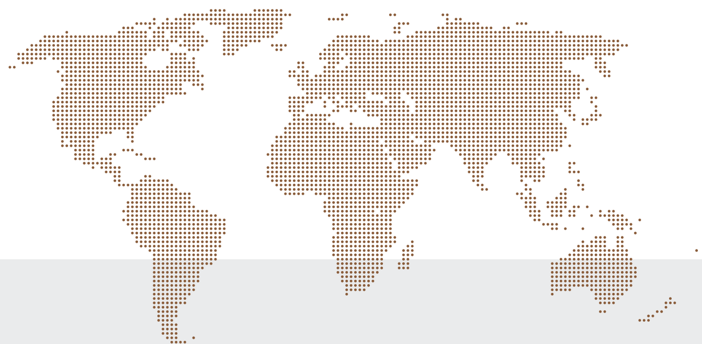
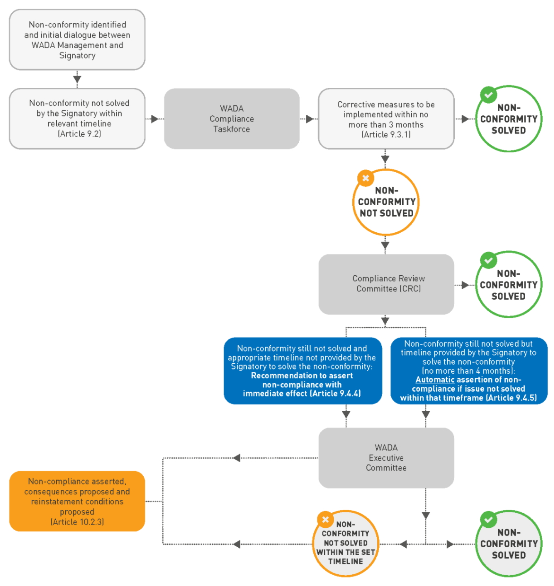
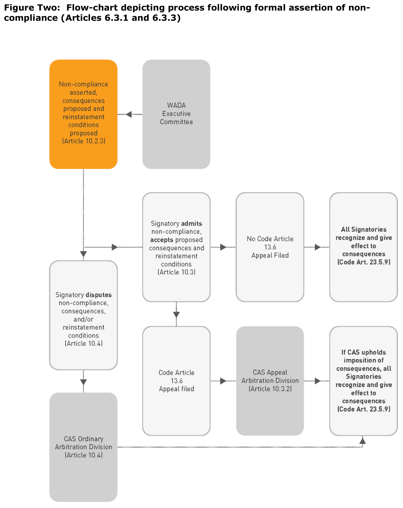

International Standards · ISCCS
Edition 2018 · effective 1 April 2018 · superseded
Retrieved on 25 November 2026 from https://www.wada-ama.org/sites/default/files/resources/files/isccs_april_2018_0.pdf
Editions: 2027 (current) · 2024 · 2021 · 2018
p. 1
International Standard for Code Compliance by Signatories
WORLD ANTI-DOPING CODE INTERNATIONAL
STANDARD

CODE COMPLIANCE BY SIGNATORIES
APRIL 2018
p. 2
FOREWORD
The International Standard for Code Compliance by Signatories is a mandatory International Standard that forms an essential part of the World Anti-Doping Program. It was developed in consultation with Signatories, public authorities, and other relevant stakeholders. It was approved by the World Anti-Doping Agency's (WADA) Executive Committee on 15 November 2017 and came into effect on 1 April 2018, and will apply to all cases of Signatory non-compliance arising after that date.
Published by:
World Anti-Doping Agency Stock Exchange Tower 800 Place Victoria (Suite 1700) PO Box 120 Montreal, Quebec Canada H4Z 1B7
URL: www.wada-ama.org Tel: +1 514 904 9232 Fax: +1 514 904 8650
p. 3
p. 4
p. 5
PART ONE: INTRODUCTION, CODE PROVISIONS, INTERNATIONAL STANDARD PROVISIONS, AND DEFINITIONS
1.0 Introduction and Scope
Signatories to the World Anti-Doping Code (the Code) commit to comply with a number of legal, technical and operational requirements that are set out in the Code and the accompanying International Standards. Such compliance is necessary to deliver harmonized, coordinated and effective Anti-Doping Programs at the international and national level, so that Athletes and other stakeholders can experience doping-free competition on a level playing field wherever sport is played.
The Code makes WADA responsible for monitoring and enforcing compliance by Signatories with the Code and the International Standards. The Code also requires Signatories to report on their compliance to WADA.
The International Standard for Code Compliance by Signatories sets out:
- the roles, responsibilities and procedures of the different bodies involved in WADA's compliance monitoring function (Part Two, Section 6);
- the support and assistance that WADA will offer to Signatories in their efforts to comply with the Code and the International Standards (Part Two, Section 7);
- the means by which WADA will monitor compliance by Signatories with their obligations under the Code and the International Standards (Part Two, Section 8);
- the opportunities and support that WADA will offer to Signatories to correct Non-Conformities before any formal action is taken (Part Two, Section 9);
- the process to be followed in determining non-compliance and the consequences of such non-compliance if a Signatory fails to correct the Non-Conformities. This process mirrors, insofar as is appropriate and practicable, the process followed in determining Code non-compliance and the consequences of such non-compliance for Athletes and other individuals (Part Two, Section 10);
- the range of potential consequences that might be imposed for non-compliance, and the principles to be applied to determine the consequences to be imposed in a particular case, depending on the facts and circumstances of that case (Part Two, Section 11); and
- the procedures that WADA will follow to ensure that a Signatory that has been determined to be non-compliant is Reinstated as quickly as p. 6 possible once it has corrected that non-compliance (Part Two, Section 12).
The ultimate objective is to ensure that strong, *Code-*compliant anti-doping rules and programs are applied and enforced consistently and effectively across all sports and all countries, so that clean Athletes can have confidence that there is fair competition on a level playing field, and public confidence in the integrity of sport can be maintained. However, the International Standard for Code Compliance by Signatories is flexible enough to recognize certain priorities. In particular, it includes specific provisions (including a special fast-track process) to enable WADA to take urgent and effective action to address instances of deliberate/bad faith non-compliance with critical Code requirements. Beyond that, it also gives WADA discretion to prioritize its compliance efforts in particular areas and/or with particular Signatories. Most importantly, Signatories who are seeking in good faith to comply with the Code will be encouraged and supported to achieve and maintain full Code Compliance. The desire is always to have Signatories address any compliance issues voluntarily. Having a Signatory declared non-compliant and Signatory Consequences imposed is the last resort, to be pursued only where the Signatory has failed, despite every encouragement, to take the necessary corrective actions within the required timelines.
In the interests of transparency and accountability, WADA may publish as much detail as it considers appropriate about its general compliance monitoring program. It may also publish information about activities and outcomes in respect of individual Signatories who have been the subject of specific action under the program.
Terms used in this International Standard that are defined terms from the Code are written in italics. Terms that are defined in this or another International Standard (see Part One, Articles 4.2 and 4.3) are underlined.
2.0 Relevant Code Provisions
The following provisions in the Code are directly relevant to the International Standard for Code Compliance by Signatories:
PURPOSE, SCOPE AND ORGANIZATION OF THE WORLD ANTI-DOPING PROGRAM AND THE CODE
The purposes of the World Anti-Doping Code and the World Anti-Doping Program which supports it are:
- To protect the Athletes' fundamental right to participate in doping-free sport and thus promote health, fairness and equality for Athletes worldwide, and
- To ensure harmonized, coordinated and effective anti-doping programs at the international and national level with regard to detection, deterrence and prevention of doping.
PART ONE DOPING CONTROL
p. 7
INTRODUCTION
Part One of the Code sets forth specific anti-doping rules and principles that are to be followed by organizations responsible for adopting, implementing or enforcing anti-doping rules within their authority, e.g. the International Olympic Committee, International Paralympic Committee, International Federations, National Olympic Committees and Paralympic Committees, Major Event Organizations, and National Anti-Doping Organizations. All such organizations are collectively referred to as Anti-Doping Organizations.
All provisions of the Code are mandatory in substance and must be followed as applicable by each Anti-Doping Organization and Athlete or other Person. The Code does not, however, replace or eliminate the need for comprehensive anti-doping rules to be adopted by each Anti-Doping Organization. …
Article 12 SANCTIONS AGAINST SIGNATORIES AND AGAINST SPORTING BODIES THAT ARE NOT SIGNATORIES
12.1 The International Standard for Code Compliance by Signatories sets out when and how WADA may proceed against a Signatory for failure to comply with its obligations under the Code and/or the International Standards, and identifies the range of possible sanctions that may be imposed on the Signatory for such non-compliance.
12.2 Nothing in the Code or the International Standard for Code Compliance by Signatories restricts the ability of any Signatory or government to take action under its own rules to enforce the obligation on any other sporting body over which it has authority to comply with, implement, uphold and enforce the Code within that body's area of competence.
Article 13 APPEALS
…
13.6 Appeals from decisions under Article 23.5.5
A notice that is not disputed and so becomes a final decision under Article 23.5.5, finding a Signatory non-compliant with the Code and imposing consequences for such non-compliance, as well as conditions for reinstatement of the Signatory, may be appealed to CAS as provided in the International Standard for Code Compliance by Signatories.
PART 3 ROLES AND RESPONSIBILITIES
p. 8
All Signatories shall act in a spirit of partnership and collaboration in order to ensure the success of the fight against doping in sport and the respect of the Code.
[Comment: Responsibilities for Signatories and Athletes or other Persons are addressed in various Articles in the Code and the responsibilities listed in this part are additional to these responsibilities.]
Article 20 ADDITIONAL ROLES AND RESPONSIBILITIES OF SIGNATORIES
20.1 Roles and Responsibilities of the International Olympic Committee
20.1.1 To adopt and implement anti-doping policies and rules for the Olympic Games which conform with the Code.
20.1.2 To require as a condition of recognition by the International Olympic Committee that International Federations and National Olympic Committees within the Olympic Movement are in compliance with the Code.
20.1.3 To withhold some or all Olympic funding and/or other benefits from sport organizations that are not in compliance with the Code, where required under Article 23.5.
20.1.4 To take appropriate action to discourage non-compliance with the Code, in accordance with Article 23.5 and the International Standard for Code Compliance by Signatories.
20.1.5 To authorize and facilitate the Independent Observer Program.
20.1.6 To require all Athletes and each Athlete Support Person who participates as coach, trainer, manager, team staff, official, medical or paramedical personnel in the Olympic Games to agree to be bound by anti-doping rules in conformity with the Code as a condition of such participation.
20.1.7 To vigorously pursue all potential anti-doping rule violations within its jurisdiction including investigation into whether Athlete Support Personnel or other Persons may have been involved in each case of doping.
20.1.8 To accept bids for the Olympic Games only from countries where the government has ratified, accepted, approved or acceded to the UNESCO Convention and the National Olympic Committee, National Paralympic Committee and National Anti-Doping Organization are in compliance with the Code.
20.1.9 To promote anti-doping education.
p. 9
20.1.10 To cooperate with relevant national organizations and agencies and other Anti-Doping Organizations.
20.2 Roles and Responsibilities of the International Paralympic Committee
20.2.1 To adopt and implement anti-doping policies and rules for the Paralympic Games which conform with the Code.
20.2.2 To require as a condition of membership of the International Paralympic Committee, that International Federations and National Paralympic Committees within the Paralympic Movement are in compliance with the Code.
20.2.3 To withhold some or all Paralympic funding and/or other benefits from sport organizations that are not in compliance with the Code, where required under Article 23.5.
20.2.4 To take appropriate action to discourage non-compliance with the Code, in accordance with Article 23.5 and the International Standard for Code Compliance by Signatories.
20.2.5 To authorize and facilitate the Independent Observer Program.
20.2.6 To require all Athletes and each Athlete Support Person who participates as coach, trainer, manager, team staff, official, medical or paramedical personnel in the Paralympic Games to agree to be bound by anti-doping rules in conformity with the Code as a condition of such participation.
20.2.7 To vigorously pursue all potential anti-doping rule violations within its jurisdiction including investigation into whether Athlete Support Personnel or other Persons may have been involved in each case of doping.
20.2.8 To promote anti-doping education.
20.2.9 To cooperate with relevant national organizations and agencies and other Anti-Doping Organizations.
20.3 Roles and Responsibilities of International Federations
20.3.1 To adopt and implement anti-doping policies and rules which conform with the Code.
20.3.2 To require as a condition of membership that the policies, rules and programs of their National Federations and other members are in compliance with the Code, and to take appropriate action to enforce that condition.
20.3.3 To require all Athletes and each Athlete Support Person who participates as coach, trainer, manager, team staff, official, medical or paramedical personnel in a Competition or activity authorized or organized by the International Federation or one of its member organizations to agree to be bound by anti-doping rules in conformity with the Code as a condition of such participation.
p. 10
20.3.4 To require Athletes who are not regular members of the International Federation or one of its member National Federations to be available for Sample collection and to provide accurate and up-to-date whereabouts information as part of the International Federation's Registered Testing Pool consistent with the conditions for eligibility established by the International Federation or, as applicable, the Major Event Organization.
[Comment to Article 20.3.4: This would include, for example, Athletes from professional leagues.]
20.3.5 To require each of their National Federations to establish rules requiring all Athletes and each Athlete Support Person who participates as coach, trainer, manager, team staff, official, medical or paramedical personnel in a Competition or activity authorized or organized by a National Federation or one of its member organizations to agree to be bound by anti-doping rules and Anti-Doping Organization results management authority in conformity with the Code as a condition of such participation.
20.3.6 To require National Federations to report any information suggesting or relating to an anti-doping rule violation to their National Anti-Doping Organization and International Federation and to cooperate with investigations conducted by any Anti-Doping Organization with authority to conduct the investigation.
20.3.7 To take appropriate action to discourage non-compliance with the Code, in accordance with Article 23.5 and the International Standard for Code Compliance by Signatories.
20.3.8 To authorize and facilitate the Independent Observer Program at International Events.
20.3.9 To withhold some or all funding to their member National Federations that are not in compliance with the Code.
20.3.10 To vigorously pursue all potential anti-doping rule violations within their jurisdiction including investigation into whether Athlete Support Personnel or other Persons may have been involved in each case of doping, to ensure proper enforcement of Consequences, and to conduct an automatic investigation of Athlete Support Personnel in the case of any anti-doping rule violation involving a Minor or Athlete Support
p. 11
Person who has provided support to more than one Athlete found to have committed an anti-doping rule violation.
20.3.11 To accept bids for World Championships and other International Events only from countries where the government has ratified, accepted, approved or acceded to the UNESCO Convention and the National Olympic Committee and National Anti-Doping Organization are in compliance with the Code.
20.3.12 To promote anti-doping education, including requiring National Federations to conduct anti-doping education in coordination with the applicable National Anti-Doping Organization.
20.3.13 To cooperate with relevant national organizations and agencies and other Anti-Doping Organizations.
20.3.14 To cooperate fully with WADA in connection with investigations conducted by WADA pursuant to Article 20.7.10.
20.3.15 To have disciplinary rules in place and require National Federations to have disciplinary rules in place to prevent Athlete Support Personnel who are Using Prohibited Substances or Prohibited Methods without valid justification from providing support to Athletes within the International Federation's or National Federation's authority.
20.4 Roles and Responsibilities of National Olympic Committees and National Paralympic Committees.
20.4.1 To ensure that their anti-doping policies and rules conform with the Code.
20.4.2 To require as a condition of membership or recognition that National Federations' anti-doping policies and rules are in compliance with the applicable provisions of the Code, and to take appropriate action to enforce that condition.
20.4.3 To respect the autonomy of the National Anti-Doping Organization in their country and not to interfere in its operational decisions and activities.
20.4.4 To require National Federations to report any information suggesting or relating to an anti-doping rule violation to their National Anti-Doping Organization and International Federation and to cooperate with investigations conducted by any Anti-Doping Organization with authority to conduct the investigation.
20.4.5 To require as a condition of participation in the Olympic Games and Paralympic Games that, at a minimum, Athletes who are not regular members of a National Federation be p. 12 available for Sample collection and to provide whereabouts information as required by the International Standard for Testing and Investigations as soon as the Athlete is identified on the long list or subsequent entry document submitted in connection with the Olympic Games or Paralympic Games.
20.4.6 To cooperate with their National Anti-Doping Organization and to work with their government to establish a National Anti-Doping Organization where one does not already exist, provided that in the interim, the National Olympic Committee or its designee shall fulfil the responsibility of a National Anti-Doping Organization.
20.4.6.1 For those countries that are members of a Regional Anti-Doping Organization, the National Olympic Committee, in cooperation with the government, shall maintain an active and supportive role with their respective Regional Anti-Doping Organizations.
20.4.7 To require each of their National Federations to establish rules (or other means) requiring each Athlete Support Person who participates as a coach, trainer, manager, team staff, official, medical or paramedical personnel in a Competition or activity authorized or organized by a National Federation or one of its member organizations to agree to be bound by anti-doping rules and Anti-Doping Organization results management authority in conformity with the Code as a condition of such participation.
20.4.8 To withhold some or all funding, during any period of his or her Ineligibility, to any Athlete or Athlete Support Person who has violated anti-doping rules.
20.4.9 To withhold some or all funding to their member or recognized National Federations that are not in compliance with the Code.
20.4.10 To vigorously pursue all potential anti-doping rule violations within their jurisdiction including investigation into whether Athlete Support Personnel or other Persons may have been involved in each case of doping.
20.4.11 To promote anti-doping education, including requiring National Federations to conduct anti-doping education in coordination with the applicable National Anti-Doping Organization.
20.4.12 To cooperate with relevant national organizations and agencies and other Anti-Doping Organizations.
20.4.13 To have disciplinary rules in place to prevent Athlete Support Personnel who are Using Prohibited Substances or
p. 13
Prohibited Methods without valid justification from providing support to Athletes within the National Olympic Committee's or National Paralympic Committee's authority.
20.5 Roles and Responsibilities of National Anti-Doping Organizations.
20.5.1 To be independent in their operational decisions and activities.
20.5.2 To adopt and implement anti-doping rules and policies which conform with the Code.
20.5.3 To cooperate with other relevant national organizations and agencies and other Anti-Doping Organizations.
20.5.4 To encourage reciprocal Testing between National Anti-Doping Organizations.
20.5.5 To promote anti-doping research.
20.5.6 Where funding is provided, to withhold some or all funding, during any period of his or her Ineligibility, to any Athlete or Athlete Support Person who has violated anti-doping rules.
20.5.7 To vigorously pursue all potential anti-doping rule violations within their jurisdiction including investigation into whether Athlete Support Personnel or other Persons may have been involved in each case of doping and to ensure proper enforcement of Consequences.
20.5.8 To promote anti-doping education.
20.5.9 To conduct an automatic investigation of Athlete Support Personnel within their jurisdiction in the case of any anti-doping rule violation by a Minor and to conduct an automatic investigation of any Athlete Support Person who has provided support to more than one Athlete found to have committed an anti-doping rule violation.
20.5.10 To cooperate fully with WADA in connection with investigations conducted by WADA pursuant to Article 20.7.10.
[Comment to Article 20.5: For some smaller countries, a number of the responsibilities described in this Article may be delegated by their National Anti-Doping Organization to a Regional Anti-Doping Organization.]
20.6 Roles and Responsibilities of Major Event Organizations.
20.6.1 To adopt and implement anti-doping policies and rules for their Events which conform with the Code.
p. 14
20.6.2 To take appropriate action to discourage non-compliance with the Code, in accordance with Article 23.5 and the International Standard for Code Compliance by Signatories.
20.6.3 To authorize and facilitate the Independent Observer Program.
20.6.4 To require all Athletes and each Athlete Support Person who participates as coach, trainer, manager, team staff, official, medical or paramedical personnel in the Event to agree to be bound by anti-doping rules in conformity with the Code as a condition of such participation.
20.6.5 To vigorously pursue all potential anti-doping rule violations within its jurisdiction including investigation into whether Athlete Support Personnel or other Persons may have been involved in each case of doping.
20.6.6 To accept bids for Events only from countries where the government has ratified, accepted, approved or acceded to the UNESCO Convention and the National Olympic Committee and National Anti-Doping Organization are in compliance with the Code.
20.6.7 To promote anti-doping education.
20.6.8 To cooperate with relevant national organizations and agencies and other Anti-Doping Organizations.
20.7 Roles and Responsibilities of WADA.
20.7.1 To adopt and implement policies and procedures which conform with the Code.
20.7.2 To provide support and guidance to Signatories in their efforts to comply with the Code and the International Standards, to monitor such compliance by Signatories, to notify Signatories of instances of non-conformity and explain what must be done to correct them, to secure the imposition of appropriate consequences when a Signatory does not correct the non-conformity, as well as conditions that the Signatory must satisfy in order to be reinstated to the list of Code-compliant Signatories, and to verify the fulfilment of those conditions, all in accordance with the International Standard for Code Compliance by Signatories.
20.7.3 To approve International Standards applicable to the implementation of the Code.
20.7.4 To accredit and reaccredit laboratories to conduct Sample analysis or to approve others to conduct Sample analysis.
p. 15
20.7.5 To develop and publish guidelines and models of best practice.
20.7.6 To promote, conduct, commission, fund and coordinate anti-doping research and to promote anti-doping education.
20.7.7 To design and conduct an effective Independent Observer Program and other types of Event advisory programs.
20.7.8 To conduct, in exceptional circumstances and at the direction of the WADA Director General, Doping Controls on its own initiative or as requested by other Anti-Doping Organizations, and to cooperate with relevant national and international organizations and agencies, including but not limited to, facilitating inquiries and investigations.
[Comment to Article 20.7.8: WADA is not a Testing agency, but it reserves the right, in exceptional circumstances, to conduct its own tests where problems have been brought to the attention of the relevant Anti-Doping Organization and have not been satisfactorily addressed.]
20.7.9 To approve, in consultation with International Federations, National Anti-Doping Organizations, and Major Event Organizations, defined Testing and Sample analysis programs.
20.7.10 To initiate its own investigations of anti-doping rule violations and other activities that may facilitate doping.
PART FOUR ACCEPTANCE, COMPLIANCE, MODIFICATION AND INTERPRETATION
Article 23 ACCEPTANCE, COMPLIANCE AND MODIFICATION
23.1 Acceptance of the Code
23.1.1 The following entities shall be Signatories accepting the Code: WADA, the International Olympic Committee, International Federations, the International Paralympic Committee, National Olympic Committees, National Paralympic Committees, Major Event Organizations, and National Anti-Doping Organizations. These entities shall accept the Code by signing a declaration of acceptance upon approval by each of their respective governing bodies.
[Comment to Article 23.1.1: Each accepting Signatory will separately sign an identical copy of the standard form common declaration of acceptance and deliver it to WADA. The act of acceptance will be as authorized by the organic documents of each organization. For example, an International Federation by its Congress and WADA by its Foundation Board.]
p. 16
23.1.2 Other sport organizations that may not be under the control of a Signatory may, upon WADA's invitation, also become a Signatory by accepting the Code.
[Comment to Article 23.1.2: Those professional leagues that are not currently under the jurisdiction of any government or International Federation will be encouraged to accept the Code.]
23.1.3 A list of all acceptances will be made public by WADA.
23.2 Implementation of the Code
23.2.1 The Signatories shall implement applicable Code provisions through policies, statutes, rules or regulations according to their authority and within their relevant spheres of responsibility.
23.2.2 The following Articles as applicable to the scope of the anti-doping activity which the Anti-Doping Organization performs must be implemented by Signatories without substantive change (allowing for any non-substantive changes to the language in order to refer to the organization's name, sport, section numbers, etc.):
- Article 1 (Definition of Doping)
- Article 2 (Anti-Doping Rule Violations)
- Article 3 (Proof of Doping)
- Article 4.2.2 (Specified Substances)
- Article 4.3.3 (WADA's Determination of the Prohibited List)
- Article 7.11 (Retirement from Sport)
- Article 9 (Automatic Disqualification of Individual Results)
- Article 10 (Sanctions on Individuals)
- Article 11 (Consequences to Teams)
- Article 13 (Appeals) with the exception of 13.2.2, 13.6, and 13.7
- Article 15.1 (Recognition of Decisions)
- Article 17 (Statute of Limitations)
- Article 24 (Interpretation of the Code)
p. 17
· Appendix 1 - Definitions
No additional provision may be added to a Signatory's rules which changes the effect of the Articles enumerated in this Article. A Signatory's rules must expressly acknowledge the Commentary of the Code and endow the Commentary with the same status that it has in the Code.
[Comment to Article 23.2.2: Nothing in the Code precludes an Anti-Doping Organization from adopting and enforcing its own specific disciplinary rules for conduct by Athlete Support Personnel related to doping but which does not, in and of itself, constitute an anti-doping rule violation under the Code. For example, a National or International Federation could refuse to renew the license of a coach when multiple Athletes have committed anti-doping rule violations while under that coach's supervision.]
23.2.3 In implementing the Code, the Signatories are encouraged to use the models of best practice recommended by WADA.
23.3 Implementation of Anti-Doping Programs.
Signatories shall devote sufficient resources in order to implement anti-doping programs that are compliant in all areas with the Code and the International Standards.
23.4 Compliance with the Code
Signatories shall not be considered in compliance with the Code until they have accepted and implemented the Code in accordance with Articles 23.1, 23.2, and 23.3. They shall no longer be considered in compliance once acceptance has been withdrawn.
23.5 Monitoring and Enforcing Compliance with the Code
23.5.1 Compliance by Signatories with the Code and the International Standards shall be monitored by WADA in accordance with the International Standard for Code Compliance by Signatories.
23.5.2 To facilitate such monitoring, each Signatory shall report to WADA on its compliance with the Code and the International Standards as and when required by WADA. As part of that reporting, the Signatory shall provide accurately all of the information requested by WADA and shall explain the actions it is taking to correct any non-conformities.
23.5.3 Failure by a Signatory to provide accurate information in accordance with Article 23.5.2 itself constitutes an instance of non-conformity with the Code, as does failure by a Signatory to submit accurate information to WADA where required by other Articles of the Code or by the International Standard for Code Compliance by Signatories.
p. 18
23.5.4 In cases of non-conformity (whether with reporting obligations or otherwise), WADA shall follow the corrective procedures set out in the International Standard for Code Compliance by Signatories. If the Signatory fails to correct the non-conformity within the specified timeframe, then (following approval of such course by WADA's Executive Committee) WADA shall send a formal notice to the Signatory, asserting that the Signatory is non-compliant, specifying the consequences that WADA proposes should apply for such non-compliance, and specifying the conditions that WADA proposes the Signatory should have to satisfy in order to be reinstated to the list of Code-compliant Signatories. That notice will be publicly reported in accordance with the International Standard for Code Compliance by Signatories.
23.5.5 If the Signatory does not dispute WADA's assertion of non-compliance or the consequences or reinstatement conditions proposed by WADA within twenty-one days of receipt of the formal notice, the assertion will be deemed admitted and the consequences and reinstatement conditions will be deemed accepted, the notice will automatically become a final decision, and (subject only to any appeal filed in accordance with Article 13.6) it will be enforceable with immediate effect in accordance with Article 23.5.9. The decision will be publicly reported as provided in the International Standard for Code Compliance by Signatories.
23.5.6 If the Signatory wishes to dispute WADA's assertion of non-compliance, and/or the consequences and/or the reinstatement conditions proposed by WADA, it must notify WADA in writing within twenty-one days of its receipt of the notice from WADA. WADA shall then file a formal notice of dispute with CAS and that dispute will be resolved by the CAS Ordinary Arbitration Division in accordance with the International Standard for Code Compliance by Signatories. WADA shall have the burden of proving, on the balance of probabilities, that the Signatory is non-compliant. If the CAS Panel decides that WADA has met that burden, and if the Signatory has also disputed the consequences and/or the reinstatement conditions proposed by WADA, the CAS Panel will also consider, by reference to the relevant provisions of the International Standard for Code Compliance by Signatories, what consequences should be imposed and/or what conditions the Signatory should be required to satisfy in order to be reinstated.
23.5.7 WADA will publicly report the fact that the case has been referred to CAS for determination. Each of the following Persons shall have the right to intervene and participate as a party in the case, provided it gives notice of its intervention within 10 days of such publication by WADA: (a) the
p. 19
14 International Olympic Committee and/or the International Paralympic Committee (as applicable), and the National Olympic Committee and/or the National Paralympic Committee (as applicable), where the decision may have an effect in relation to the Olympic Games or Paralympic Games (including decisions affecting eligibility to attend/participate in the Olympic Games or Paralympic Games); and (b) an International Federation, where the decision may have an effect on participation in the International Federation's World Championships/International Events and/or on a bid that has been submitted for a country to host the International Federation's World Championships. Any other Person wishing to participate as a party in the case must apply to CAS within 10 days of publication by WADA of the fact that the case has been referred to CAS for determination. CAS shall permit such intervention (i) if all other parties in the case agree; or (ii) if the applying Person demonstrates a sufficient legal interest in the outcome of the case to justify its participation as a party.
23.5.8 CAS's decision resolving the dispute will be publicly reported by CAS and by WADA. Subject to the right under Swiss law to challenge that decision before the Swiss Federal Tribunal, the decision shall be final and enforceable with immediate effect in accordance with Article 23.5.9.
23.5.9 The following decisions are applicable worldwide, and shall be recognized, respected and given full effect by all other Signatories in accordance with their authority and within their respective spheres of responsibility: (a) final decisions issued in accordance with Article 23.5.5 (subject to any appeal under Article 13.6) or Article 23.5.8, determining that a Signatory is non-compliant, and/or imposing consequences for such non-compliance, and/or setting conditions that the Signatory has to satisfy in order to be reinstated to the list of *Code-*compliant Signatories; and (b) final decisions issued in accordance with Article 23.5.10, determining that a Signatory has not yet met all of the reinstatement conditions imposed on it and therefore is not yet entitled to be reinstated to the list of Code-compliant Signatories.
23.5.10 If a Signatory wishes to dispute WADA's assertion that the Signatory has not yet met all of the reinstatement conditions imposed on it and therefore is not yet entitled to be reinstated to the list of Code-compliant Signatories, the Signatory must file a formal notice of dispute with CAS (with a copy to WADA) within twenty-one days of its receipt of the assertion from WADA. The dispute will be resolved by the CAS Ordinary Arbitration Division in accordance with Articles 23.5.6 to 23.5.8. It will be WADA's burden to prove on the balance of probabilities that the Signatory has not yet met all of the p. 20 reinstatement conditions imposed on it and therefore is not yet entitled to be reinstated.
23.6 Monitoring Compliance with the UNESCO Convention
Compliance with the commitments reflected in the UNESCO Convention will be monitored as determined by the Conference of Parties to the UNESCO Convention, following consultation with the State Parties and WADA. WADA shall advise governments on the implementation of the Code by the Signatories and shall advise Signatories on the ratification, acceptance, approval or accession to the UNESCO Convention by governments.
3.0 Relevant Provisions of the International Standard for Laboratories
The following provisions in the International Standard for Laboratories are directly relevant to the International Standard for Code Compliance by Signatories:
4.1 Applying for a WADA Laboratory Accreditation
…
4.1.2 Submitting initial application form
The candidate laboratory shall complete the necessary information in the Application Form as provided by WADA and deliver this to WADA. The Application shall be signed by the Laboratory Director and, if relevant, by the Director of the host organization.
At this stage, WADA will verify the existence of a National Anti-Doping Program (compliant with the Code and International Standards) in the country where the candidate laboratory is located, the ratification of the UNESCO Convention against Doping in Sport by the host country of the candidate laboratory, as well as the payment of the nation's financial contributions to WADA.
4.0 Definitions and Interpretation
4.1 Defined terms from the 2015 Code that are used in the International Standard for Code Compliance by Signatories
ADAMS: The Anti-Doping Administration and Management System is a Web-based database management tool for data entry, storage, sharing, and reporting designed to assist stakeholders and WADA in their anti-doping operations in conjunction with data protection legislation.
p. 21
Adverse Analytical Finding: A report from a WADA-accredited laboratory or other WADA-approved laboratory that, consistent with the International Standard for Laboratories and related Technical Documents, identifies in a Sample the presence of a Prohibited Substance or its Metabolites or Markers (including elevated quantities of endogenous substances) or evidence of the Use of a Prohibited Method.
Adverse Passport Finding: A report identified as an Adverse Passport Finding as described in the applicable International Standards.
Anti-Doping Organization: A Signatory that is responsible for adopting rules for initiating, implementing or enforcing any part of the Doping Control process. This includes, for example, the International Olympic Committee, the International Paralympic Committee, other Major Event Organizations that conduct Testing at their Events, WADA, International Federations, and National Anti-Doping Organizations.
Athlete: Any Person who competes in sport at the international level (as defined by each International Federation) or the national level (as defined by each National Anti-Doping Organization). An Anti-Doping Organization has discretion to apply anti-doping rules to an Athlete who is neither an International-Level Athlete nor a National-Level Athlete, and thus to bring them within the definition of "Athlete." …
Athlete Biological Passport: The program and methods of gathering and collating data as described in the International Standard for Testing and Investigations and International Standard for Laboratories.
Athlete Support Personnel: Any coach, trainer, manager, agent, team staff, official, medical, paramedical personnel, parent or any other Person working with, treating or assisting an Athlete participating in or preparing for sports Competition.
Atypical Finding: A report from a WADA-accredited laboratory or other WADA-approved laboratory which requires further investigation as provided by the International Standard for Laboratories or related Technical Documents prior to the determination of an Adverse Analytical Finding.
CAS: The Court of Arbitration for Sport.
Code: The World Anti-Doping Code.
Doping Control: All steps and processes from test distribution planning through to ultimate disposition of any appeal including all steps and processes in between such as provision of whereabouts information, Sample collection and handling, laboratory analysis, TUEs, results management and hearings.
p. 22
Event: A series of individual Competitions conducted together under one ruling body (e.g., the Olympic Games, FINA World Championships, or Pan American Games).
Independent Observer Program: A team of observers, under the supervision of WADA, who observe and provide guidance on the Doping Control process at certain Events and report on their observations.
International Event: An Event or Competition where the International Olympic Committee, the International Paralympic Committee, an International Federation, a Major Event Organization, or another international sport organization is the ruling body for the Event or appoints the technical officials for the Event.
International Standard: A standard adopted by WADA in support of the Code. Compliance with an International Standard (as opposed to another alternative standard, practice or procedure) shall be sufficient to conclude that the procedures addressed by the International Standard were performed properly. International Standards shall include any Technical Documents issued pursuant to the International Standard.
Major Event Organizations: The continental associations of National Olympic Committees and other international multi-sport organizations that function as the ruling body for any continental, regional or other International Event.
National Anti-Doping Organization: The entity(ies) designated by each country as possessing the primary authority and responsibility to adopt and implement anti-doping rules, direct the collection of Samples, the management of test results, and the conduct of hearings at the national level. If this designation has not been made by the competent public authority(ies), the entity shall be the country's National Olympic Committee or its designee.
National Olympic Committee: The organization recognized by the International Olympic Committee. The term National Olympic Committee shall also include the National Sport Confederation in those countries where the National Sport Confederation assumes typical National Olympic Committee responsibilities in the anti-doping area.
Person: A natural Person or an organization or other entity.
Prohibited Substance: Any substance, or class of substances, so described on the Prohibited List.
Registered Testing Pool: The pool of highest-priority Athletes established separately at the international level by International Federations and at the national level by National Anti-Doping Organizations, who are subject to focused In-Competition and Outof-Competition Testing as part of that International Federation's or National Anti-Doping Organization's test distribution plan and therefore are required to provide whereabouts information as provided in Article 5.6 and the International Standard for Testing and Investigations.
p. 23
Regional Anti-Doping Organization: A regional entity designated by member countries to coordinate and manage delegated areas of their national Anti-Doping Programs, which may include the adoption and implementation of anti-doping rules, the planning and collection of Samples, the management of results, the review of TUEs, the conduct of hearings, and the conduct of educational programs at a regional level.
Sample or Specimen: Any biological material collected for the purposes of Doping Control.
Signatories: Those entities signing the Code and agreeing to comply with the Code, as provided in Article 23.
Target Testing: Selection of specific Athletes for Testing based on criteria set forth in the International Standard for Testing and Investigations.
Testing: The parts of the Doping Control process involving test distribution planning, Sample collection, Sample handling, and Sample transport to the laboratory.
TUE: Therapeutic Use Exemption, as described in Article 4.4.
UNESCO Convention: The International Convention against Doping in Sport adopted by the 33rd session of the UNESCO General Conference on 19 October 2005, including any and all amendments adopted by the States Parties to the Convention and the Conference of Parties to the International Convention against Doping in Sport.
WADA: The World Anti-Doping Agency.
4.2 Defined terms from the International Standard for Testing and Investigations that are used in the International Standard for Code Compliance by Signatories
Sample Collection Authority: The organization that is responsible for the collection of Samples in compliance with the requirements of the International Standard for Testing and Investigations, whether (1) the Testing Authority itself; or (2) another organization (for example, a third party contractor) to whom the Testing Authority has delegated or sub-contracted such responsibility (provided that the Testing Authority always remains ultimately responsible under the Code for compliance with the requirements of the International Standard for Testing and Investigations relating to collection of Samples).
p. 24
Sample Collection Personnel: A collective term for qualified officials authorized by the Sample Collection Authority to carry out or assist with duties during the Sample Collection Session.
Test Distribution Plan: A document written by an Anti-Doping Organization that plans Testing on Athletes over whom it has Testing Authority, in accordance with the requirements of Article 4 of the International Standard for Testing and Investigations.
Testing Authority: The organization that has authorized a particular Sample collection, whether (1) an Anti-Doping Organization (for example, the International Olympic Committee or other Major Event Organization, WADA, an International Federation, or a National Anti-Doping Organization); or (2) another organization conducting Testing pursuant to the authority of and in accordance with the rules of the Anti-Doping Organization (for example, a National Federation that is a member of an International Federation).
4.3 Defined terms specific to the International Standard for Code Compliance by Signatories
Aggravating Factors: Applicable only in cases involving non-compliance with one or more Critical requirements, this term encompasses a deliberate attempt to circumvent or undermine the Code or the International Standards and/or to corrupt the anti-doping system, an attempt to cover up non-compliance, or any other form of bad faith on the part of the Signatory in question; a persistent refusal or failure by the Signatory to make any reasonable effort to correct Non-Conformities that are notified to it by WADA; repeat offending; and any other factor that aggravates the Signatory's failure to comply with the Code and/or International Standards.
Anti-Doping Activities: Anti-doping education and information, test distribution planning, maintenance of a Registered Testing Pool, managing Athlete Biological Passports, conducting Testing, organizing analysis of Samples, gathering of intelligence and conduct of investigations, processing of TUE applications, results management, hearings, monitoring and enforcing compliance with any consequences imposed, and all other activities related to anti-doping to be carried out by or on behalf of a Signatory, as set out in the Code and/or the International Standards.
Anti-Doping Program: The legislation, rules, regulations, processes and procedures, and other activities (including Anti-Doping Activities) that a Signatory is required to implement in order to achieve Code Compliance.
p. 25
Approved Third Party: One or more Anti-Doping Organizations and/or service providers selected or approved by WADA, following consultation with the non-compliant Signatory, to Supervise or Takeover some or all of that Signatory's Anti-Doping Activities. As a last resort, if there is no other suitable body available, then WADA may carry out this function itself.
Code Compliance: Compliance with all of the requirements in the Code and/or the International Standards that apply to the Signatory in question.
Code Compliance Questionnaire: A self-assessment survey issued by WADA in the form of a questionnaire through which a Signatory reports to WADA on its Code Compliance.
Compliance Audit: A formal assessment conducted by WADA of all or part of a Signatory's Anti-Doping Program, in accordance with Article 8.7.
Compliance Review Committee or CRC: As described in Article 6.2.1.
Corrective Action Plan: A plan drafted by a Signatory, setting out how the Signatory will implement the corrective actions identified by WADA in a Corrective Action Report within the timelines set in that report.
Corrective Action Report: A report produced by WADA that identifies Non-Conformities by a Signatory and the corrective actions that the Signatory must take to correct them within set timelines.
Critical: A requirement that is considered to be critical to the fight against doping in sport. See further Annex A.
Event of Force Majeure: An event affecting a Signatory's ability to achieve full Code Compliance that arises from or is attributable to acts, events, omissions or accidents that are beyond the reasonable control of the Signatory. Such events may include any natural physical disaster, war, military operations, riot, crowd disorder, strike, lock-outs or other industrial action, terrorist action, or civil commotion. In accordance with Article 9.4.3, however, such events shall not in any circumstances include lack of resources on the part of the Signatory, changes in elected officials or personnel, or any interference or failure to provide support or other act or omission by any governmental or public agency.
Fine: Payment by the Signatory of an amount that reflects the seriousness of the non-compliance/Aggravating Factors, their duration, and the need to deter similar conduct in future, but in any event the fine shall not exceed the lower of (a) 10% of the Signatory's annual income and (b) US$100,000. The fine will be applied by WADA to finance further Code Compliance monitoring activities.
p. 26
High Priority: A requirement that is considered to be high priority but not Critical in the fight against doping in sport. See further Annex A.
Mandatory Information Request: A request that WADA may send to a Signatory, requiring the Signatory to provide specified information by a specified deadline to enable WADA to assess the Signatory's Code Compliance.
Non-Conformity: Where a Signatory is not complying with the Code and/or the International Standards but the opportunities provided in the International Standard for Code Compliance by Signatories to correct the Non-Conformity/Non-Conformities have not yet expired and so WADA has not yet formally asserted that the Signatory is non-compliant.
Other: A requirement that is considered to be important to the fight against doping in sport but does not fall into the categories of Critical or High Priority. See further Annex A.
Reinstatement: When a Signatory that was previously declared non-compliant with the Code and/or the International Standards is determined to have corrected that non-compliance and to have met all of the other conditions imposed in accordance with Article 12 for reinstatement of its name to the list of *Code-*compliant Signatories (and Reinstated shall be interpreted accordingly).
Representatives: Officials, directors, officers, elected members, employees, and committee members of the Signatory or other body in question, and also (in the case of a National Anti-Doping Organization or a National Olympic Committee acting as a National Anti-Doping Organization) representatives of the government of the country of that National Anti-Doping Organization or National Olympic Committee.
Signatory Consequences: One or more of the consequences set out in Article 11.1 that may be imposed on a Signatory as a result of its failure to comply with the Code and/or the International Standards.
Special Monitoring: Where, as part of the Signatory Consequences imposed on a non-compliant Signatory, WADA applies a system of specific and ongoing monitoring to some or all of the Signatory's Anti-Doping Activities, to ensure that the Signatory is carrying out those activities in a compliant manner.
Supervision: Where, as part of the Signatory Consequences imposed on a non-compliant Signatory, an Approved Third Party oversees and supervises the Signatory's Anti-Doping Activities, as directed by WADA, at the Signatory's expense (and Supervise shall be interpreted accordingly).
p. 27
Takeover: Where, as part of the Signatory Consequences imposed on a non-compliant Signatory, an Approved Third Party takes over all or some of the Signatory's Anti-Doping Activities, as directed by WADA, at the Signatory's expense.
WADA Auditor: A suitably experienced WADA staff member or external anti-doping specialist who has been trained by WADA to collect information in support of the assessment of a Signatory's Code Compliance. The external anti-doping specialist should be free of any conflict of interest in respect of each Compliance Audit that he/she undertakes.
WADA Privileges: The benefits listed at Article 11.1.1.1.
4.4 Interpretation
4.4.1 The official text of the International Standard for Code Compliance by Signatories shall be maintained by WADA and shall be published in English and French. In the event of any conflict between the English and French versions, the English version shall prevail.
4.4.2 Like the Code, the International Standard for Code Compliance by Signatories has been drafted giving due consideration to the principles of respect for human rights, proportionality, and other applicable legal principles. It shall be interpreted and applied in that light.
4.4.3 The comments annotating various provisions of the International Standard for Code Compliance by Signatories shall be used to guide its interpretation and application.
4.4.4 Unless otherwise specified, (a) references to Sections and Articles are references to Sections and Articles of the International Standard for Code Compliance by Signatories; and (b) references to days are to calendar days, not working/business days.
4.4.5 The Annexes to the International Standard for Code Compliance by Signatories have the same mandatory status as the rest of the International Standard for Code Compliance by Signatories.
PART TWO: STANDARDS FOR WADA'S MONITORING AND ENFORCEMENT OF CODE COMPLIANCE BY SIGNATORIES
5.0 Objective
5.1 The objective of Part Two of the International Standard for Code Compliance by Signatories is to ensure that Signatories deliver Anti-Doping Programs within their respective spheres of responsibility that meet the p. 28 requirements of the Code and the International Standards, so that there is a level playing field wherever sport is played.
5.2 To emphasize, the desire is always to have Signatories address any compliance issues voluntarily. Having a Signatory declared non-compliant and Signatory Consequences imposed is the last resort, to be pursued only where the Signatory has failed, despite every encouragement, to take the necessary corrective actions within the required timelines.
5.3 Therefore, the focus of WADA's compliance monitoring program is on dialogue and communication with Signatories, assisting them in their efforts to ensure full Code Compliance and providing them with guidance for the continuous improvement of their Anti-Doping Programs. Where instances of Non-Conformity are identified, the International Standard for Code Compliance by Signatories establishes objective, pre-determined, and transparent procedures and standards that give the Signatory the opportunity to correct those Non-Conformities, and that lead (if the Non-Conformities are not corrected) to a determination of non-compliance and the imposition of predictable, graded and proportionate Signatory Consequences. It also sets out a clear pathway to Reinstatement.
p. 29
6.0 WADA's Compliance Monitoring Program
Figure One: Flow-chart depicting process from identification of Non-Conformity to assertion of non-compliance (Articles 6.1 to 6.3)

6.1 Operational Oversight of Code Compliance
6.1.1 Operational oversight of Code Compliance is provided by WADA Management through an internal WADA taskforce consisting of staff from different WADA departments.
6.1.2 WADA Management is responsible for co-ordinating and directing the development of all activities related to WADA's Code Compliance monitoring program in coordination with the Compliance Review Committee, and in accordance with any prioritization of effort approved by the Compliance Review Committee further to Article 8.2. This includes:
p. 30
6.1.2.1 co-ordinating the provision of ongoing support and assistance by WADA to Signatories in meeting their obligations under the Code and the International Standards (see Article 7);
6.1.2.2 using all tools at WADA's disposal to monitor Code Compliance by Signatories, including but not limited to ADAMS, Code Compliance Questionnaires, Mandatory Information Requests, Compliance Audits, and any other relevant information received or collected by WADA (see Article 8);
6.1.2.3 where Non-Conformities are identified, opening a dialogue with the Signatory, identifying corrective actions to be taken by the Signatory to correct the Non-Conformities, and providing guidance to help the Signatory to complete the corrective actions within the set timelines (see Article 9);
6.1.2.4 assessing whether the Signatory's corrective actions have corrected the Non-Conformities in full, referring cases where the Non-Conformities have not been corrected in full to the Compliance Review Committee, providing reports with relevant supporting information to facilitate CRC discussions, and implementing and following up on CRC recommendations (see Article 10);
6.1.2.5 where a Signatory fails to correct the Non-Conformities within the required timeframe, and following the recommendation of the Compliance Review Committee, obtaining the approval of WADA's Executive Committee to notify the Signatory formally of the non-compliance asserted, with such notice also specifying the Signatory Consequences that it is proposed should apply for such non-compliance and the conditions that it is proposed the Signatory should have to satisfy in order to be Reinstated (see Articles 10, 11 and 12); and
6.1.2.6 monitoring the Signatory's efforts to satisfy the Reinstatement conditions imposed on it, in order to report to the CRC on whether and when to recommend that the Signatory be Reinstated (see Article 12).
6.2 Independent Review and Recommendations
6.2.1 The Compliance Review Committee is an independent, non-political WADA Standing Committee that oversees WADA's Code Compliance monitoring efforts and enforcement activities, and provides advice and recommendations on such matters to WADA's Executive Committee.
6.2.1.1 The CRC is governed by by-laws designed to ensure the independence, political neutrality and specialization of its members that underpin the credibility of its work. The by-laws include strict conflict of interest provisions that require CRC members to declare any potential conflicts of interest and to exclude themselves from all deliberations of the CRC in any matter in which they may have a conflict of interest.
p. 31
6.2.2 The CRC follows standardized procedures encompassing review, assessment, communication, and the making of recommendations to WADA's Executive Committee on matters relating to Code Compliance and Reinstatement. These procedures (see Articles 9, 10 and 12) are designed to support a transparent, objective, and consistent approach to the assessment and enforcement of Code Compliance.
6.2.2.1 Where WADA Management reports apparent Non-Conformities to the CRC, a procedure is followed that gives the Signatory in question time and opportunity to explain and address the Non-Conformities within a specified timeframe and so achieve full Code Compliance (see Article 9).
6.2.2.2 If the Signatory does not correct the Non-Conformities within the framework of that procedure, the CRC will review the case in detail and decide whether to recommend to WADA's Executive Committee that a formal notice be issued to the Signatory, (a) asserting that the Signatory is non-compliant; (b) proposing Signatory Consequences for such non-compliance in accordance with Article 11; and (c) proposing conditions that the Signatory should be required to satisfy in order to be Reinstated, in accordance with Article 12.
6.2.3 In addition to reviewing and assessing compliance-related issues raised with it by WADA Management, at any time the CRC may identify compliance-related issues of its own accord to be addressed by WADA Management.
6.3 Independent Determination of Non-Compliance and Consequences
6.3.1 In accordance with Code Article 23.5.4, upon the recommendation of the CRC, WADA's Executive Committee may decide that a Signatory should be formally notified of its asserted non-compliance with the Code and/or the International Standards, with such notice also specifying the Signatory Consequences that it is proposed should apply for such non-compliance, and the conditions that it is proposed the Signatory should have to satisfy in order to be Reinstated. (See Figure One above).
6.3.2 If the Signatory accepts or does not dispute the contents of that notice within twenty-one days of its receipt, the assertion of non-compliance will be deemed admitted and the consequences and Reinstatement conditions will be deemed accepted, and (unless appealed in accordance with Code Article 13.6) the notice will automatically become a final decision enforceable with immediate effect in accordance with Code Article 23.5.9. If the Signatory disputes any part of the notice, the dispute will be resolved by CAS in accordance with Code Article 23.5.7.
6.3.3 Once the notice is accepted as a final decision by the Signatory, or (if disputed) once a final decision is issued by CAS, if that decision includes consequences being imposed on the Signatory, then, in accordance with Code Article 23.5.9, that decision shall be applicable worldwide and shall be recognized, respected and given effect by all other Signatories in accordance with their authority and within their respective spheres of responsibility. (See Figure Two below).
p. 32

Figure Two: Flow-chart depicting process following formal assertion of non-compliance (Articles 6.3.1 and 6.3.3)
6.4 Reinstatement Procedures
6.4.1 Where applicable, WADA Management will report to the CRC on the Signatory's implementation of the Reinstatement conditions, and the CRC p. 33 will then make recommendations to WADA's Executive Committee as to whether or not the Signatory has satisfied those conditions and should be Reinstated.
6.4.2 If WADA's Executive Committee asserts that a Signatory has not yet satisfied its Reinstatement conditions and so should not yet be Reinstated, if the Signatory disputes that assertion, the dispute will be resolved by CAS in accordance with Code Articles 23.5.6 to 23.5.9. In accordance with Code Article 23.5.9, CAS's decision shall be applicable worldwide and shall be recognized, respected and given effect by all other Signatories in accordance with their authority and within their respective spheres of responsibility.
7.0 WADA's Support for Signatories' Efforts to Achieve/Maintain Code Compliance
7.1 Objective
7.1.1 WADA's priority is to support Signatories in strengthening their Anti-Doping Programs, thereby increasing the protection that they provide to clean Athletes. It shall remain at all times the Signatory's obligation to achieve full Code Compliance, and it shall not be a defence or excuse that others did not help the Signatory to comply. However, WADA will use all reasonable endeavours to provide support and assistance to Signatories seeking to achieve, maintain or return to full Code Compliance.
7.2 Operational and Technical Support
7.2.1 WADA will provide operational and technical support to Signatories to assist them to achieve, maintain, or (where applicable) return to full Code Compliance, including by providing advice and information, by developing resources, guidelines, training materials, and training programs, and by facilitating partnerships with other Anti-Doping Organizations where possible. Where the WADA budget allows, this support shall be provided without cost to Signatories.
7.2.2 By way of illustration, WADA has developed a number of documents and tools to assist Signatories to understand their responsibilities under the Code and the International Standards, and to achieve and maintain full compliance with those responsibilities, including:
7.2.2.1 Technical Documents, such as the Technical Document for Sport Specific Analysis;
7.2.2.2 model rules for the implementation of the Code and the International Standards within the Signatory's area of competence;
7.2.2.3 guideline documents covering the implementation of various components of a *Code-*compliant Anti-Doping Program, including (without limitation) Testing, TUEs, results management, education, and intelligence and investigations;
p. 34
7.2.2.4 template documents and forms; and
7.2.2.5 online educational tools.
7.2.3 WADA has also developed the Code Compliance Questionnaire and the Compliance Audit program, which are designed to help Signatories to identify Non-Conformities in their Anti-Doping Programs and to devise and implement plans to correct those Non-Conformities. WADA will provide various forms of support and assistance to Signatories in understanding its Code Compliance Questionnaire, its Compliance Audit program, and all other aspects of its compliance monitoring program, including information sessions; a dedicated section of its website where materials relevant to the compliance monitoring program will be posted, including answers to Frequently Asked Questions; and other support resources.
7.2.4 A Signatory may seek assistance from another Signatory to help it achieve full Code Compliance. WADA will seek to assist Signatories in setting up such partnerships, including providing further information and guidelines on partnership agreements on its website. A Signatory may also appoint a third party to carry out Anti-Doping Activities on its behalf. In accordance with Article 9.4.3, however, the Signatory shall always remain fully liable for any Non-Conformities arising as a result. The Signatory shall ensure that it is able to require the third party to cooperate in full with (and to enable the Signatory to cooperate in full with) all of WADA's compliance monitoring efforts, including (without limitation) properly addressing Code Compliance Questionnaires, Mandatory Information Requests, and Compliance Audits.
7.2.5 As set out in Article 9, when Non-Conformities are identified, whether in a completed Code Compliance Questionnaire or in a Compliance Audit or otherwise, the focus of WADA Management will be on assisting the Signatory in question through dialogue and support to achieve full Code Compliance. The Signatory will be given adequate opportunity to dispute or to address and correct the Non-Conformities, including (if necessary) by WADA providing a Corrective Action Report that sets out which corrective actions are required, and specifies set timelines for their completion. The Corrective Action Report may also include recommendations as to best practice, and may refer where appropriate to resources and materials posted on WADA's website that may assist the Signatory in responding to the report and strengthening its Anti-Doping Program. In addition, WADA will review any Corrective Action Plan provided by a Signatory and provide comments as necessary to ensure that it is fit for purpose.
8.0 Monitoring Signatories' Compliance Efforts
8.1 Objective
8.1.1 In accordance with its obligation under Code Article 20.7.2 to monitor Code Compliance by Signatories, WADA reviews Signatories' rules and regulations (and/or legislation, if that is how the Code has been implemented in a particular country) to ensure that they are compliant with the Code and the International Standards. It also assesses whether Signatories are implementing their rules, regulations and legislation through Anti-Doping Programs that meet all of the requirements of the Code and the International Standards. The purpose of this Section 8 of the International Standard for Code Compliance by Signatories is to set out the standards that will govern these monitoring activities. The objective will always be to make the monitoring process as efficient and cost-effective as possible.
p. 35
8.2 Prioritization Between Different Signatories
8.2.1 The following parties are all Signatories to the Code:
8.2.1.1 the International Olympic Committee and the International Paralympic Committee;
8.2.1.2 other Major Event Organizations;
8.2.1.3 International Federations;
8.2.1.4 National Olympic Committees and National Paralympic Committees;
8.2.1.5 National Anti-Doping Organizations; and
8.2.1.6 various other organizations listed on WADA's website, including but not limited to associations of National Olympic Committees, associations of International Federations, organizations for athletes with an impairment that are not International Federations, and national Commonwealth Games Associations.
8.2.2 Given the large number of Signatories and WADA's limited resources, the CRC may approve proposals by WADA Management to prioritize the monitoring for Code Compliance (a) of certain categories of Signatories, based on the scope of the Anti-Doping Activities required of such categories of Signatories under the Code; and/or (b) of certain specific Signatories, based on an objective risk assessment. The following is a non-exhaustive list of factors that may be considered in such assessment:
8.2.2.1 (where the Signatory is an International Federation) the physiological risk of doping in a particular sport/discipline;
8.2.2.2 (where the Signatory is an International Federation) participation of the Signatory in the Olympic and/or Paralympic Games;
8.2.2.3 performances by Athletes from a particular country in International Events;
8.2.2.4 a history of doping in a particular country or a particular sport/discipline;
8.2.2.5 a Signatory's response to a Mandatory Information Request or a Code Compliance Questionnaire;
p. 36
8.2.2.6 receipt of credible intelligence or the results of an investigation suggesting there may be significant Non-Conformities in the Signatory's Anti-Doping Program;
8.2.2.7 a Signatory's breach of Critical or High Priority requirements under the Code or an International Standard;
8.2.2.8 a Signatory's failure to implement recommendations following collaboration programs in which WADA acted as a facilitator or a party;
8.2.2.9 a Signatory's failure to implement measures (e.g., Target Testing) following a recommendation made or endorsed by WADA (e.g., in relation to Testing in the lead-up to the Olympic Games or Paralympic Games or other Event);
8.2.2.10 (where the Signatory is a NADO or a National Olympic Committee acting as a NADO) the fact that the Signatory's country hosts a WADA-accredited laboratory and/or is bidding to host or has won the right to host a major sporting event;
8.2.2.11 where a Signatory that has been found to be non-compliant is seeking to be Reinstated; and/or
8.2.2.12 a request by WADA's Executive Committee and/or WADA's Foundation Board.
8.2.3 Code Article 20 requires International Federations, National Olympic Committees and National Paralympic Committees to monitor and enforce Code compliance by their members/recognized bodies. Accordingly, WADA will not actively monitor Code compliance by those members/recognized bodies, but rather will expect the Signatories in question to do so. If in the course of its monitoring activities WADA learns of apparent non-compliance with the Code by a member/recognized body of such Signatory, it will notify the Signatory for appropriate follow-up and action in accordance with the Signatory's obligations under the Code.
8.2.4 In addition, again given the large number of Signatories and WADA's limited resources, the CRC may approve proposals by WADA Management to prioritize enforcement of Critical and (in certain circumstances) High Priority requirements of the Code and/or the International Standards (including, where necessary, by asserting non-compliance and proposing imposition of Signatory Consequences), while giving Signatories additional opportunity to take corrective action to ensure compliance with other requirements of the Code and/or the International Standards. The greatest priority will be given to pursuing the imposition of appropriate Signatory Consequences in cases involving non-compliance with Critical requirements and Aggravating Factors.
8.2.5 WADA may also enlist the support of other bodies to assist it in its monitoring tasks.
p. 37
8.2.6 For the avoidance of doubt, a Signatory shall remain required to comply in full at all times with its obligations under the Code and the International Standards, whether or not it is prioritized for monitoring by WADA.
8.3 Cooperation With Other Bodies
8.3.1 WADA may cooperate as appropriate with other relevant bodies in promoting full Code Compliance by Signatories, including (without limitation) with UNESCO in its efforts to promote governments' compliance with the UNESCO Convention, with the Council of Europe in its efforts to promote governments' compliance with its Anti-Doping Convention, and/or with any other intergovernmental organization or initiative. The purpose of such cooperation will be to facilitate and maximize the efficacy of WADA's own efforts in monitoring Code Compliance by Signatories.
8.3.2 Such cooperation may include (without limitation) co-ordinating with the other body's compliance monitoring activities in relation to a specific country (e.g., joint site visits, co-ordinated questionnaires), exchange of relevant information that may be of assistance in such activities, and co-ordinating actions aimed at assisting and encouraging compliance by relevant parties.
8.4 WADA's Monitoring Tools
8.4.1 WADA may make use of all legal means at its disposal to monitor Code Compliance by Signatories, including (without limitation):
8.4.1.1 requiring each Signatory, in accordance with Code Article 23.5.2, to complete and submit Code Compliance Questionnaires and/or other reports on its Code Compliance within reasonable and clearly communicated timelines. Such reports shall provide all information requested by WADA accurately and completely, explain the reasons for any Non-Conformities identified, and describe the efforts the Signatory has made and/or proposes to make to correct such Non-Conformities;
8.4.1.2 conducting Compliance Audits of Signatories' ongoing Anti-Doping Programs, in accordance with Article 8.7, in order to assess their Code Compliance, to identify and categorize Non-Conformities, and to identify corrective actions required to correct the Non-Conformities and so achieve full Code Compliance;
8.4.1.3 conducting Independent Observer Programs (a) at the Olympic Games and the Paralympic Games, and (b) at other selected Events;
8.4.1.4 reviewing the adequacy of Signatories' responses to recommendations made or endorsed by WADA to implement Target Testing and/or other measures in the lead-up to the Olympic Games or Paralympic Games or other Event;
p. 38
8.4.1.5 reviewing the following key documents:
(a) Signatories' rules and regulations (and/or relevant legislation, if that is how the Code has been implemented in a particular country);
(b) Signatories' risk assessments and Test Distribution Plans provided in accordance with Code Article 5.4.2;
(c) Signatories' annual statistical reports of their respective Doping Control activities provided in accordance with Code Article 14.4;
(d) Doping Control forms, TUE decisions, and other data filed in ADAMS (including assessing compliance with requirements to file such information in ADAMS within specified timeframes, and reviewing TUE decisions for compliance with the International Standard for Therapeutic Use Exemptions);
(e) reports compiled by other relevant bodies (e.g., reports from country visits conducted by the Monitoring Group of the Anti-Doping Convention of the Council of Europe); and
(f) any other documents or data requested by WADA Management from the Signatory in order to assess the Signatory's Code Compliance;
8.4.1.6 reviewing results management decisions made by Signatories and communicated to WADA in accordance with Code Articles 7.10 and 14.1.4 and under Article 12.4.3 of the International Standard for Testing and Investigations, including (without limitation) decisions by Signatories:
(a) not to bring an Atypical Finding forward as an Adverse Analytical Finding;
(b) not to bring an Adverse Analytical Finding or an Adverse Passport Finding forward as an anti-doping rule violation;
(c) not to bring whereabouts failures or other apparent violations forward as anti-doping rule violations;
(d) to withdraw the assertion of an anti-doping rule violation; and
(e) to agree on the outcome of proceedings asserting an anti-doping rule violation without first holding a hearing;
provided that, save in exceptional cases, WADA will not assert that a Signatory is non-compliant based solely on a single non-compliant results management decision. Instead, WADA will (1) notify the Signatory within a reasonable period following receipt of the decisions of results management decisions that WADA Management considers to be non-compliant; and (2) only take further action against the Signatory for non-compliance if, notwithstanding such notification, a material number of results management decisions issued by that Signatory continue to be non-compliant;
p. 39
8.4.1.7 assessing and processing intelligence about potential Non-Conformities obtained from reliable sources, including but not limited to WADA's Intelligence and Investigations Department, Signatories and other stakeholders, WADA-accredited laboratories and other laboratories approved by WADA, Sample Collection Authorities and/or Sample Collection Personnel, law enforcement and other relevant authorities (including other regulatory and/or disciplinary bodies), Athletes and other Persons, whistleblowers, the media, and members of the public;
8.4.1.8 using the powers given to WADA under Code Article 10.6.1 to encourage Athletes and other Persons to provide information in relation to non-compliance by Signatories;
8.4.1.9 asking WADA's Intelligence and Investigations Department to follow up on intelligence regarding, and/or to investigate potential instances of, non-compliance by Signatories; and
8.4.1.10 using any other relevant and reliable information or data available to it.
8.4.2 Where a Signatory is required to provide compliance information to WADA (e.g., in response to a Code Compliance Questionnaire or a Mandatory Information Request) that is the Signatory's proprietary and confidential information, WADA will treat that information confidentially, and will use it only to monitor Code Compliance and not for any other purpose.
8.5 Code Compliance Questionnaires
8.5.1 Code Article 23.5.2 requires Signatories to report to WADA on their Code Compliance when requested by WADA's Executive Committee.
8.5.2 As and when determined by WADA's Executive Committee on the recommendation of the CRC (but no more than once every three years, unless exceptional circumstances arise), WADA will send Code Compliance Questionnaires to Signatories to enable them to self-assess and self-report on their Code Compliance and any potential Non-Conformities. The Code Compliance Questionnaire may require the Signatory to provide documentation to support and supplement its responses to the questions in the Code Compliance Questionnaire.
8.5.3 WADA will specify a reasonable deadline for return of the completed Code Compliance Questionnaire, including any accompanying documentation. It will send reminders to Signatories as the deadline approaches.
p. 40
8.5.3.1 Where the Signatory is a Major Event Organization, WADA may ask it to complete and submit a Code Compliance Questionnaire in advance of the Event, describing the Anti-Doping Program it proposes to put in place for the Event, so that any Non-Conformities can be identified and corrected in advance.
8.5.4 Further to Code Article 23.5.3, a failure by a Signatory to return an accurate and complete Code Compliance Questionnaire to WADA by the specified deadline is itself a failure to comply with Code Article 23.5.2 that will trigger the process outlined in Article 9.3.1.
8.5.5 WADA will review the information provided in a completed Code Compliance Questionnaire to assess the Signatory's degree of Code Compliance. WADA shall seek to verify a Signatory's responses to specific questions in the Code Compliance Questionnaire by reference to information obtained from other, reliable sources, such as data filed in ADAMS, and independent investigation reports. WADA will discuss any apparent discrepancies between the Signatory's responses and such data with the Signatory prior to drawing any conclusions.
8.5.6 Where WADA determines that the Code Compliance Questionnaire does not reveal any Non-Conformities, the Signatory will be duly notified in writing. If in fact there are (and were at the time) Non-Conformities that WADA was not able to identify in its review of the Signatory's completed Code Compliance Questionnaire, but instead identified as part of its other compliance monitoring activities, WADA's original conclusion shall not constrain in any way its ability to take the steps specified in this International Standard for Code Compliance by Signatories to have the Non-Conformities corrected by the Signatory.
8.5.7 Where WADA identifies Non-Conformities based on the Signatory's completed Code Compliance Questionnaire, it will issue a Corrective Action Report in accordance with Article 9.2.
8.6 Mandatory Information Requests
8.6.1 Independently of any other monitoring activity, where WADA receives information indicating that a Signatory may not be complying with Critical or High Priority requirements, WADA Management may send the Signatory a Mandatory Information Request requiring it to provide information that enables WADA to confirm the actual position. WADA shall only request information that is necessary for WADA to assess the Signatory's Code Compliance effectively, and that is not already available to WADA through other sources (such as ADAMS). The request will explain why WADA Management is asking for the information and will specify the deadline for the Signatory to provide it (which deadline shall be no less than twenty-one days later).
8.6.2 WADA Management will assign a WADA Auditor to review the response received from the Signatory and to provide an assessment and recommendation, including (where appropriate) a recommendation to issue a Corrective Action Report in accordance with Article 9.2.
p. 41
8.6.3 If the Signatory fails to provide the required response to a Mandatory Information Request within the timeline specified in the Corrective Action Report, that will trigger the process outlined in Article 9.3.1.
8.7 The Compliance Audit Program
8.7.1 WADA Management will decide (subject to CRC oversight) which Signatories shall undergo a Compliance Audit. The factors listed at Article 8.2.2 may trigger a Compliance Audit. Signatories may also be selected for a Compliance Audit based on any other relevant reason or credible intelligence collected or received by WADA.
8.7.2 The Compliance Audit will be conducted by WADA Auditors. The Compliance Audit may be conducted in person (i.e., where the audit team visits the Signatory and conducts the assessment of the Signatory's Anti-Doping Program in the presence of relevant members of the Signatory's team) or via an exchange of written information initiated by a request from WADA, such as a Mandatory Information Request.
8.7.3 In each case, the Signatory shall cooperate with WADA and the WADA audit team in all aspects of the Compliance Audit. A lack of cooperation may be referred by WADA Management to the CRC for consideration as a potential Non-Conformity.
8.7.4 Arranging an in-person Compliance Audit:
8.7.4.1 WADA will send the Signatory a notice of its selection for a Compliance Audit, the names of the lead auditor and the other members of the audit team, and the dates on which the audit team proposes to visit the Signatory's offices to conduct the audit (which is usually 2-3 days in duration). The dates identified should give the Signatory at least one month to prepare for the audit visit.
8.7.4.2 The Signatory has twenty-one days to respond to the notice with confirmation that the dates proposed for the audit are convenient, or explaining why those dates are not convenient and proposing alternative dates that are as close as possible to the dates proposed by WADA. The Signatory cannot refuse to be audited, and if it does not cooperate in finding appropriate dates then ultimately WADA may specify the dates on which the audit visit will take place.
8.7.4.3 Once the dates are confirmed, WADA will send the Signatory an audit plan providing guidance on the scope of the audit to be conducted and on how to prepare for the audit visit.
8.7.4.4 At least fourteen days prior to the audit visit, the lead auditor should communicate directly (e.g., by telephone call or by in-person meeting) with the Signatory's main contact for compliance matters, in order to confirm all necessary arrangements, answer any questions on the audit, and discuss how information should be prepared and presented by the Signatory to the audit team.
p. 42
8.7.5 In all cases, the Signatory shall facilitate the visit of the WADA audit team, including arranging for appropriate staff to be present during the audit visit, and providing the necessary meeting and related facilities for the WADA audit team to carry out the Compliance Audit.
8.7.6 At the opening meeting of the audit, the audit team will explain the approach it will take for the Compliance Audit, confirm the scope of the audit, and what it expects from the Signatory in terms of cooperation and support for the audit. It will give the Signatory the opportunity to ask any questions the Signatory may have in relation to the audit.
8.7.7 During the Compliance Audit, the audit team will assess the Signatory's Anti-Doping Program using information held on file from different sources, including the Signatory's completed Code Compliance Questionnaire, data filed in ADAMS, independent investigation reports, intelligence collected or received, media reports that WADA considers reliable, and any other reliable information available to it. The audit team will seek out representative examples and evidence of the work conducted by the Signatory as part of its Anti-Doping Program, noting any discrepancies between such examples and evidence and the information that the Signatory has provided (e.g., in its Code Compliance Questionnaire). The Signatory shall cooperate in providing the audit team with full access to all information, procedures and systems required to complete the Compliance Audit.
8.7.8 At the closing meeting, the audit team will verbally present its preliminary findings to the Signatory, including identifying any apparent Non-Conformities (focusing on Critical and High Priority requirements). The Signatory will be given an opportunity to note any disagreement with the audit team's preliminary findings during the closing meeting. The audit team will also outline the likely follow-up process and timeframes in terms of corrective actions, so that the Signatory may start addressing the findings immediately, i.e., without waiting for the Corrective Action Report. Following completion of the audit, the lead auditor will present the audit findings in a draft Corrective Action Report to WADA Management. As soon as practicable thereafter, a final Corrective Action Report will be issued to the Signatory in accordance with Article 9.2.
8.7.9 WADA will pay the costs of the Compliance Audit in the first instance, subject to potential reimbursement by the Signatory in accordance with Article 12.2.1.4 of the costs of a Compliance Audit.
8.7.10 WADA may publish on its website a list of Signatories that have undergone a Compliance Audit. Once an audit is complete, and the Signatory in question has received the final Corrective Action Report, WADA may publish a summary of the audit outcomes.
p. 43
9.0 Giving Signatories the Opportunity to Correct Non-Conformities
9.1 Objective
9.1.1 When Non-Conformities are identified, the objective will be to assist the Signatory through dialogue and support to correct the Non-Conformities and so achieve and maintain full Code Compliance.
9.1.2 This Section 9 of the International Standard for Code Compliance by Signatories sets out the procedures that WADA will follow in giving the Signatory adequate opportunity to address and correct the Non-Conformities identified. The various steps in the process are presented in flow-chart format in Figure One (Article 6 above).
9.2 Corrective Action Reports and Corrective Action Plans
9.2.1 Where the Signatory's rules or regulations (or applicable legislation, where that is the means that has been used to implement the Code) are not compliant with the Code, WADA Management will give the Signatory written notice of the Non-Conformities and a three-month deadline to correct them without unnecessary delay (or to provide draft corrections and a confirmed timeline for their adoption).
9.2.2 Where WADA identifies Non-Conformities in any other aspects of a Signatory's Anti-Doping Program (whether as a result of a Code Compliance Questionnaire or a Compliance Audit, or as a result of information provided in response to a Mandatory Information Request, or otherwise), WADA Management will send the Signatory a Corrective Action Report that:
9.2.2.1 identifies Non-Conformities with requirements that are considered to be Critical, which the Signatory must correct within a timeline specified by WADA of no more than three months; and/or
9.2.2.2 identifies Non-Conformities with requirements that are considered to be High Priority, which the Signatory must correct within a timeline specified by WADA of no more than six months; and/or
9.2.2.3 identifies Non-Conformities with Other requirements, which the Signatory must correct within a timeline specified by WADA of no more than nine months;
save that if the Signatory is a Major Event Organization, then the above timelines will not apply. Instead the matter will be addressed in accordance with the fast track procedures set out at Article 9.5.
9.2.3 Having sent the Corrective Action Report, WADA Management will establish a dialogue with the Signatory (or ask the relevant WADA Regional Office to do so) to ensure that the Signatory has received the Corrective Action Report, and that the Signatory understands what it needs to do to implement the required corrective actions within the specified timelines.
p. 44
9.2.4 If the Signatory disputes the Non-Conformities identified in the Corrective Action Report, and/or their classification as Critical or High Priority, WADA Management shall review the position. If the position is maintained following that review, the Signatory may request that the dispute be referred to the Compliance Review Committee in accordance with Article 9.4.1. If the CRC agrees with the view of WADA Management, and the matter proceeds to an assertion of non-compliance, the Signatory may continue to dispute the Non-Conformities and/or their classification in the CAS proceedings. If the CRC does not agree with the view of WADA Management, WADA Management may take the issue to WADA's Executive Committee for decision.
9.2.5 Subject to Article 9.2.4, the Signatory shall correct the Non-Conformities within the timelines specified in the Corrective Action Report. The Corrective Action Report will include within it a Corrective Action Plan section for the Signatory to complete to assist the Signatory in planning who within its organization will implement each of the corrective actions, how, and by when. It is not mandatory for the Signatory to provide a Corrective Action Plan to WADA but it is strongly recommended. If the Signatory provides a Corrective Action Plan, WADA will review that plan to confirm it is fit for purpose, and if it is not fit for purpose then WADA will provide comments to assist the Signatory to make it fit for purpose.
9.2.6 WADA Management will monitor the Signatory's progress in correcting the Non-Conformities identified in the Corrective Action Report.
9.3 Final Opportunity to Correct before Referral to the CRC
9.3.1 If a Signatory does not correct all Non-Conformities within the timeline set in the Corrective Action Report, or if a Signatory fails to provide the required response to a Code Compliance Questionnaire or a Mandatory Information Request within the specified timeline, WADA Management will give the Signatory written notice of that failure and a new deadline (of up to three months) to correct it. That new deadline will not be extended again, save in exceptional cases, where the Signatory establishes that an Event of Force Majeure will make it impossible to correct the position by that deadline.
9.4 Referral to the CRC
9.4.1 If a Signatory (a) continues to dispute the Non-Conformity after an exchange of views with WADA Management; or (b) does not correct a Non-Conformity by the deadline set in accordance with Article 9.3.1; or (c) does not provide the required response to a Mandatory Information Request or Code Compliance Questionnaire by the deadline set in accordance with Article 9.3.1, WADA Management will refer the matter promptly to the CRC for consideration in accordance with Articles 9.4.2 to 9.4.5.
p. 45
9.4.2 WADA Management will advise the Signatory of the decision to refer the matter to the CRC, and that the Signatory may submit any explanations or other comments that the Signatory wishes the CRC to consider. WADA Management will communicate promptly to the CRC any explanation or comments received from the Signatory.
9.4.3 In all cases, the CRC shall review and determine for itself whether it agrees with WADA Management's classification of the Non-Conformities as Critical, High Priority, or Other. If not, they shall be re-classified (and the timelines for corrective action shall be amended accordingly) (unless WADA Management maintains its position, in which case WADA's Executive Committee shall decide). The CRC shall also consider fully and fairly any explanations or comments received from the Signatory in respect of those Non-Conformities. In particular, any Event of Force Majeure that may explain the Signatory's Non-Conformities or inability to correct them as required by the Corrective Action Report shall be fully and fairly considered. In extraordinary situations, the CRC may recommend to WADA's Executive Committee that the Non-Conformities should be provisionally excused while the Event of Force Majeure continues to prevent the Signatory's correction of the Non-Conformities. In no circumstances, however, shall it be an acceptable excuse, or a mitigating factor:
9.4.3.1 that the Signatory's failure to comply with its obligations under the Code and/or the International Standards has been caused by interference by, and/or a failure to provide support or other act or omission by, any governmental or other public authorities. Each Signatory has voluntarily accepted the obligation to comply with its obligations under the Code and the International Standards, which includes an obligation under Code Article 23.3 to devote sufficient resources, and, where applicable, an obligation to secure the support of governmental and other public authorities required to achieve and maintain Code Compliance; or
9.4.3.2 that the Signatory assigned the task of complying with some or all of its obligations under the Code and/or the International Standards to a third party (such as a Sample Collection Authority to whom the Signatory has assigned the task of collecting Samples; or a local organising committee to which a Major Event Organization has assigned the task of running its Anti-Doping Program at the Event in question).
[Comment to Article 9.4.3.2: As CAS ruled in RPC v IPC, CAS 2016/A/4745, (a) a body with an obligation to enforce the Code within its sphere of authority remains fully liable for any violations even if they are due to the actions of other bodies that it relies on but that it does not control; and (b) just as an athlete cannot escape the consequences of an anti-doping rule violation by delegating his or her responsibility to comply with his or her anti-doping obligations to others, so too a Signatory has an absolute and non-delegable obligation to comply with the requirements of the Code and the International Standards. The Signatory has the right to decide how to meet that obligation, including the right to assign certain tasks to appropriate third parties, should it see fit, but it remains fully responsible for complying with the Code and the International Standards, and is fully liable for any non-compliance caused by any failures of such third party.]
41
p. 46
9.4.4 Where the CRC considers that the Signatory has failed without valid reason to correct the Non-Conformity/ies in question or to respond to a Mandatory Information Request or Code Compliance Questionnaire satisfactorily by the specified deadline, the CRC will recommend to WADA's Executive Committee that the Signatory be sent a formal notice asserting that it is non-compliant with the requirements of the Code and/or the International Standards, categorizing the requirements in question as Critical, High Priority, or Other, identifying any Aggravating Factors, specifying the Signatory Consequences that are proposed for such non-compliance (as recommended by the CRC, in accordance with Article 11), and specifying the conditions that it is proposed the Signatory should have to satisfy in order to be Reinstated (as recommended by the CRC, in accordance with Article 12).
9.4.5 Alternatively, if the Signatory has provided a Corrective Action Plan that explains to the satisfaction of the CRC how the Signatory will correct the Non-Conformities within four months, then the CRC may recommend to WADA's Executive Committee that it decide (a) to give the Signatory that period (starting to run from the date of the Executive Committee's decision) to correct the Non-Conformities, and (b) that the formal notice described in Article 9.4.4 shall be sent to the Signatory upon expiry of that deadline (without the need for further decision by WADA's Executive Committee) if the CRC considers that the Non-Conformities have not been corrected in full by then.
9.5 Fast Track Procedure
9.5.1 This Article 9.5 applies to the following cases:
9.5.1.1 A case where (a) there is Non-Conformity by a Signatory with one or more Critical requirements of the Code and/or the International Standards; and (b) urgent intervention is required in order to maintain confidence in the integrity of a sport or sports and/or of a particular Event or Events.
9.5.1.2 A case that involves Non-Conformity by a Major Event Organization with the requirements of the Code and/or the International Standards (because the scheduling of different editions of the Event means that the standard corrective procedures and timelines set out in Articles 9.1 to 9.3 are not appropriate in such a case).
9.5.2 WADA Management may refer a case that falls within Article 9.5.1 to the CRC for urgent consideration without following all of the steps set out in the preceding Articles of this International Standard for Code Compliance by Signatories. Alternatively, if time allows, WADA Management may follow some or all of those steps but with shortened timelines, according to the urgency of the matter, and refer the case to the CRC if the Signatory has not corrected the Non-Conformities within the shortened timelines.
9.5.3 In such cases, WADA Management shall give the Signatory an opportunity to explain the apparent Non-Conformities within a specified deadline, and shall communicate any explanation provided by the Signatory within that deadline to the CRC.
p. 47
9.5.4 When WADA Management refers a case to the CRC in accordance with this Article 9.5:
9.5.4.1 The CRC will convene (in-person or otherwise) as soon as possible to consider the matter. It will consider WADA Management's assessment, and any explanation or comments provided by the Signatory in accordance with Article 9.5.3.
9.5.4.2 Following such review, if the CRC considers that a fast track procedure is not required, it may recommend:
(a) that the Signatory undergo a Compliance Audit (and/or, where the Signatory is a Major Event Organization and its Event is imminent, that a mission in the framework of the Independent Observer Program be conducted at the Event); and/or
(b) that a Corrective Action Report be issued to the Signatory, to be followed up in accordance with the normal procedures set out in Articles 9.3 and/or 9.4 (or, in the case of a Major Event Organization, to be followed up in accordance with fast track procedures that ensure the Non-Conformities are corrected well in advance of the next edition of the Event in question).
9.5.4.3 If, however, the CRC considers that a fast track procedure is required, the CRC may recommend to WADA's Executive Committee that the Signatory be sent a formal notice asserting that it is non-compliant with Critical requirements of the Code and/or the International Standards, identifying any Aggravating Factors asserted by WADA, specifying the Signatory Consequences that it is proposed to impose for such non-compliance (in accordance with Article 11) (including any such consequences that the CRC considers should be imposed urgently to protect the rights of clean athletes and/or to maintain confidence in the integrity of a sport and/or of a particular Event or Events), and specifying the conditions that it is proposed the Signatory should have to satisfy in order to be Reinstated (in accordance with Article 12).
9.5.4.4 If WADA's Executive Committee accepts that recommendation (by vote taken at an in-person meeting or, if necessary to avoid delay, by circular email communication), that formal notice shall be sent to the Signatory in accordance with Article 10.2.3 and at the same time or at any time thereafter WADA may refer the case to CAS (Ordinary Arbitration Division) and may apply to CAS for appropriate interim relief, in accordance with Article 10.4.3, or alternatively (if time allows) for an expedited proceeding.
p. 48
10.0 Confirming Non-Compliance and Imposing Signatory Consequences
10.1 CRC Recommendation
10.1.1 Articles 9.4 and 9.5 identify the circumstances in which the CRC may recommend that the Signatory be sent a formal notice asserting that it is not compliant with the requirements of the Code and/or the International Standards, categorizing the requirements in question as Critical, High Priority, or Other, identifying any Aggravating Factors alleged by WADA (in cases involving non-compliance with Critical requirements), specifying the Signatory Consequences that it is proposed should be imposed for such non-compliance (in accordance with Article 11), and specifying the conditions that it is proposed the Signatory should have to satisfy in order to be Reinstated (in accordance with Article 12).
10.2 Consideration by WADA Executive Committee
10.2.1 At its next meeting in person, or else (if the CRC so recommends) by circular email communication, WADA's Executive Committee will decide whether to accept the CRC's recommendation. The CRC's recommendation and the decision of WADA's Executive Committee in respect of that recommendation shall be made public (e.g., by publication of the minutes of WADA's Executive Committee's deliberations on the matter) no more than fourteen days after WADA's Executive Committee's decision is made.
10.2.2 If WADA's Executive Committee does not accept all or any part of the CRC's recommendation, it shall not substitute its own decision but instead shall remit the matter back to the CRC so that the CRC may consider the matter further and decide how to proceed (e.g., by making a revised recommendation to WADA's Executive Committee). If WADA's Executive Committee also does not accept the CRC's second recommendation on the matter, it may either refer the matter back to the CRC again or else take its own decision on the matter, as it sees fit.
10.2.3 Where WADA's Executive Committee decides to accept the CRC's recommendation to issue a formal notice of non-compliance to a Signatory (whether immediately, or automatically upon expiry of the deadline specified in accordance with Article 9.4.5, if the CRC concludes that the Non-Conformities have still not been corrected by then), WADA shall issue such formal notice to the Signatory, setting out the matters referenced at Article 10.1.1. The process thereafter is set out in flow-chart form in Figure Two in Article 6 above.
10.2.4 Where the Signatory Consequences specified in the formal notice may have an effect in relation to the Olympic Games or Paralympic Games, e.g., by affecting attendance at/participation in the Olympic Games or Paralympic Games, WADA shall copy the notice formally to the International Olympic Committee and/or the International Paralympic Committee (as applicable). The formal notice sent to the Signatory (or a summary thereof) shall also be publicly reported on WADA's website and sent to WADA's stakeholders once that notice has been received by the Signatory. WADA's stakeholders may assist in the publicising of the notice, such as by publicly reporting it on their own websites.
p. 49
10.3 Acceptance by the Signatory
10.3.1 The Signatory will have twenty-one days from the date of receipt of the formal notice to dispute WADA's assertion of non-compliance and/or the Signatory Consequences and/or the Reinstatement conditions proposed by WADA in the notice. Further to Article 23.5.5 of the Code, if the Signatory does not communicate such dispute in writing to WADA within twenty-one days (or such extended deadline as WADA may agree), the assertion will be deemed admitted, the Signatory Consequences and/or the Reinstatement conditions proposed by WADA in the notice will be deemed accepted, and the notice will automatically become a final decision enforceable (subject to Article 10.3.2) with immediate effect in accordance with Article 23.5.9 of the Code. This outcome will be publicly reported by WADA.
10.3.2 WADA will publicly report the decision referred to in Article 10.3.1 by posting it on its website. Any party that would have had a right under Code Article 23.5.7 to intervene in the CAS proceedings that would have taken place if the Signatory had disputed any aspect of WADA's notice shall have the right to appeal that decision by filing an appeal with CAS within twenty-one days of WADA posting that decision on its website. The appeal shall be resolved by the CAS Appeals Arbitration Division in accordance with the CAS Code of Sports-related Arbitration and Mediation Rules and this International Standard for Code Compliance by Signatories (and in the case of conflict between them, the latter shall prevail). Swiss law will govern the proceedings. The seat of the arbitration, and the venue of any hearings, shall be Lausanne, Switzerland. Unless the parties agree otherwise, the proceedings will be conducted in English and the CAS Panel that hears and determines the dispute will be composed of three arbitrators. WADA and the Signatory shall each nominate an arbitrator to sit on the CAS Panel, choosing either from the list of arbitrators specifically designated by CAS for cases arising under Article 23.5 of the Code or from the general CAS list of arbitrators, as each sees fit, and those two arbitrators shall together choose a third arbitrator from the former list to act as President of the CAS Panel. If they cannot agree within three days, the President of the CAS Appeal Arbitration Division will choose the President of the CAS Panel from the former list. Cases shall be completed expeditiously and (save in exceptional circumstances) the reasoned decision shall be issued no later than three months after the date of appointment of the CAS Panel. That decision shall be publicly reported by CAS and the parties.
10.4 Determination by CAS
10.4.1 If the Signatory wishes to dispute the asserted non-compliance and/or the proposed Signatory Consequences and/or the proposed Reinstatement conditions, then (in accordance with Article 23.5.6 of the Code) it must notify WADA in writing within twenty-one days of its receipt of the notice from WADA. WADA shall then file a formal notice of dispute with CAS, and the dispute will be resolved by the CAS Ordinary Arbitration Division in accordance with the CAS Code of Sports-related Arbitration and Mediation Rules and this International Standard for Code Compliance by Signatories (and in the case of conflict between them, the latter shall prevail). Swiss law will govern the proceedings. The seat of the arbitration, and the venue of any hearings, shall be Lausanne, Switzerland. Unless the parties agree otherwise, the proceedings will be conducted in English and the CAS Panel that hears and determines the dispute will be composed of three arbitrators. WADA and the Signatory shall each nominate an arbitrator to sit on the CAS Panel either from the list of arbitrators specifically designated by CAS for cases arising under Article 23.5 of the Code or from the general CAS list of arbitrators, as each sees fit, and those two arbitrators shall together choose a third arbitrator from the former list to act as the President of the CAS Panel. If they cannot agree within three days, the President of the CAS Ordinary Arbitration Division will choose the President of the CAS Panel from the former list. Third parties may intervene or apply to intervene (as applicable) as set out in Code Article 23.5.7. Cases shall be completed expeditiously and (save in exceptional circumstances) the reasoned decision shall be issued no later than three months after the date of appointment of the CAS Panel. That decision shall be publicly reported by CAS and the parties.
p. 50
10.4.2 If the Signatory has disputed WADA's assertion that the Signatory is not compliant with the Code and/or the International Standards, WADA shall have the burden of proving, on the balance of probabilities, that the Signatory is non-compliant as alleged. If the CAS Panel decides that WADA has met that burden, and if the Signatory has also disputed the Signatory Consequences and/or the Reinstatement conditions specified by WADA, the CAS Panel will also consider, by reference to the provisions of Article 11, what Signatory Consequences should be imposed and/or, by reference to the provisions of Article 12, what conditions the Signatory should be required to satisfy in order to be Reinstated.
10.4.3 No Signatory Consequences will come into effect unless and until CAS so orders. In urgent cases, however, WADA may ask CAS to issue interim measures on a provisional basis, where necessary (for example) to preserve the integrity of an Event. In such cases, if the provisional interim measures are granted, the Signatory shall have no right of appeal against those provisional interim measures but instead shall have the right to an expedited hearing on the merits of the case; and if the provisional interim measures are not granted, then CAS may issue directions for an expedited hearing on the merits of the case.
10.5 Recognition and Enforcement by Other Signatories
10.5.1 Once a decision as to a Signatory's non-compliance is final (either because the Signatory did not dispute the contents of WADA's formal notice sent in accordance with Article 10.2, or because the Signatory did dispute it but CAS ruled against the Signatory), in accordance with Code Article 23.5.9 that decision shall be applicable worldwide and shall be recognized, respected and given effect by all other Signatories in accordance with their authority and within their respective spheres of responsibility.
p. 51
10.5.2 Signatories shall ensure that they have due authority under their statutes, rules and regulations to comply with this requirement in a timely manner.
10.6 Disputes about Reinstatement
10.6.1 If a Signatory wishes to dispute WADA's assertion that the Signatory has not yet met Reinstatement conditions imposed on it and therefore is not yet entitled to be Reinstated, it must advise WADA in writing within twenty-one days of its receipt of the assertion from WADA (see Code Article 23.5.10). WADA shall then file a formal notice of dispute with CAS, and the dispute will be resolved by the CAS Ordinary Arbitration Division in accordance with Articles 23.5.6 to 23.5.8 of the Code and this Article 10.
10.6.2 It will be WADA's burden to prove on the balance of probabilities that the Signatory has not yet met the Reinstatement conditions imposed on it and therefore is not yet entitled to be Reinstated. If the case was previously considered by a CAS Panel further to Article 23.5.6 of the Code, if possible the same CAS Panel shall be constituted to hear and determine this new dispute.
11.0 Determining Signatory Consequences
11.1 Potential Consequences for Non-Compliance with the Code
11.1.1 The following is a range of Signatory Consequences that may be imposed, individually or cumulatively, on a Signatory that has failed to comply with the Code and/or the International Standards, based on application of the principles set out in Article 11.2 to the particular facts and circumstances of the case at hand:
11.1.1.1 the following consequences (referred to collectively as WADA Privileges):
(a) in accordance with the relevant provisions of WADA's Statutes, the Signatory's Representatives being ruled ineligible for a specified period to hold any WADA office or any position as a member of any WADA board or committee or other body (including but not limited to membership of WADA's Foundation Board, the Executive Committee, any Standing Committee, and any other committee) (although WADA may exceptionally permit Representatives of the Signatory to remain as members of WADA expert groups where there is no effective substitute available);
(b) the Signatory being ruled ineligible to host any event hosted or organized or co-hosted or co-organized by WADA;
(c) the Signatory's Representatives being ruled ineligible to participate in any WADA Independent Observer Program or WADA Outreach program or other WADA activities; and
p. 52
(d) withdrawal of WADA funding to the Signatory (whether direct or indirect) relating to the development of specific activities or participation in specific programs;
11.1.1.2 the Signatory's Representatives being ruled ineligible for a specified period to hold any office of or position as a member of the board or committees or other bodies of any other Signatory (or its members) or association of Signatories;
11.1.1.3 Special Monitoring of some or all of the Signatory's Anti-Doping Activities, until WADA considers that the Signatory is in a position to implement such Anti-Doping Activities itself in a compliant manner without such monitoring.
11.1.1.4 Supervision and/or Takeover of some or all of the Signatory's Anti-Doping Activities by an Approved Third Party, until WADA considers that the Signatory is in a position to implement such Anti-Doping Activities itself in a compliant manner without such measures. If the non-compliance involves non-compliant rules, regulations and/or legislation, then the Anti-Doping Activities in issue shall be conducted under other applicable rules (of one or more other Anti-Doping Organizations, e.g., International Federations or National Anti-Doping Organizations or Regional Anti-Doping Organizations) that are compliant, as directed by WADA. In that case, while the Anti-Doping Activities (including any Testing and results management) will be administered by the Approved Third Party under and in accordance with those other applicable rules at the cost of the non-compliant Signatory, any costs incurred by the Anti-Doping Organizations as a result of the use of their rules in this manner shall be reimbursed by the non-compliant Signatory;
(a) If it is not possible to fill the gap in Anti-Doping Activities in this way (for example, because national legislation prohibits it, and the National Anti-Doping Organization has not secured an amendment to that legislation or other solution to permit application of Article 11.1.1.4), then it may be necessary as an alternative measure to exclude Athletes who would have been covered by the Signatory's Anti-Doping Activities from participating in the Olympic Games/Paralympic Games/other Events, in accordance with Article 11.1.1.10, in order to protect the rights of clean Athletes and to preserve public confidence in the integrity of competition at those events.
11.1.1.5 (where the Signatory is a National Anti-Doping Organization or a National Olympic Committee acting as a National Anti-Doping Organization) the Signatory's country being ruled ineligible to host or co-host an Olympic Games and/or Paralympic Games and/or to be awarded the right to host or co-host a World Championship and/or other International Event(s);
p. 53
(a) If the right to host or co-host a World Championship and/or other International Event(s) has already been awarded to the country in question, the Signatory that awarded that right must assess whether it is legally and practically possible to withdraw that right and re-assign the event to another country. If it is legally and practically possible to do so, then the Signatory shall do so.
(b) Signatories shall ensure that they have due authority under their statutes, rules and regulations, and/or hosting agreements, to comply with this requirement (including a right in any Event hosting agreement to cancel the agreement without penalty where the relevant country has been ruled ineligible in accordance with this Article 11 to host the Event).
11.1.1.6 (in cases involving not only non-compliance with Critical requirements but also Aggravating Factors) imposition of a Fine;
11.1.1.7 loss of eligibility to receive some or all funding and/or other benefits from the International Olympic Committee or the International Paralympic Committee or any other Signatory for a specified period (with no right to receive such funding and/or other benefits for that period retrospectively following Reinstatement);
11.1.1.8 a recommendation to the relevant public authorities to withhold some or all public and/or other funding and/or other benefits from the Signatory for a specified period (with no right to receive such funding and/or other benefits for that period retrospectively following Reinstatement);
[Comment to Article 11.1.1.8: Public authorities are not Signatories to the Code. In accordance with Article 11(c) of the UNESCO Convention, however, State Parties shall, where appropriate, withhold some or all financial or other sport-related support from any sports organization or anti-doping organization that is not in compliance with the Code.]
11.1.1.9 suspension of recognition by the Olympic Movement and/or of membership of the Paralympic Movement;
11.1.1.10 (where the Signatory is a National Anti-Doping Organization or a National Olympic Committee or a National Paralympic Committee) exclusion of the following Persons from participation in or attendance at the Olympic Games and the Paralympic Games and/or other specified Events for a specified period: (a) the National Olympic Committee and/or National Paralympic Committee of the Signatory's country; (b) the Representatives of that country and/or of the National Olympic Committee and/or National Paralympic Committee of that country; (c) and/or the Athletes and Athlete Support Personnel affiliated to that country and/or to the National Olympic Committee and/or National Paralympic Committee and/or National Federation of that country;
p. 54
11.1.1.11 (where the Signatory is an International Federation) exclusion of the following Persons from participation in or attendance at the Olympic Games and the Paralympic Games and/or other multi-sport Events for a specified period: the Representatives of that International Federation and/or the Athletes and Athlete Support Personnel participating in the International Federation's sport (or in one or more disciplines of that sport); and
11.1.1.12 (where the Signatory is a Major Event Organization):
(a) Special Monitoring or Supervision of the Major Event Organization's Anti-Doping Program at the next edition(s) of its Event, such as through a mission conducted as part of an Independent Observer Program; and/or
(b) loss of eligibility to receive funding and other benefits from and/or the recognition/membership/patronage (as applicable) of the International Olympic Committee, the International Paralympic Committee, the Association of National Olympic Committees, or other patron body; and/or
(c) loss of recognition of its Event as a qualifying event for the Olympic Games or the Paralympic Games.
11.2 Principles Relevant to the Determination of the Signatory Consequences to be Applied in a Particular Case
11.2.1 The Signatory Consequences applied in a particular case shall reflect the nature and seriousness of the non-compliance in that case, taking into account both the degree of fault of the Signatory and the potential impact of its non-compliance on clean sport. As a guide to assessing the potential impact of a Signatory's non-compliance on clean sport, the different requirements of the Code and International Standards shall be categorized (in descending order of gravity) as Critical, High Priority, or Other, as described further in Annex A. Where the case involves more than one category of non-compliance, the Signatory Consequences imposed shall be based on the gravest category of non-compliance. In terms of the degree of fault of the Signatory, the obligation to comply is absolute, and so any alleged lack of intent or other fault is not a mitigating factor, but any fault or negligence on the part of a Signatory may impact on the Signatory Consequences imposed.
11.2.2 Aggravating Factors shall be taken into account only in a case involving non-compliance with one or more Critical requirements of the Code and/or the International Standards. In such a case, if there are Aggravating Factors, that case shall attract significantly greater Signatory Consequences than a case where there are no Aggravating Factors.
p. 55
11.2.3 Signatory Consequences shall be applied without improper discrimination between different categories of Signatory. In particular, given that International Federations and National Anti-Doping Organizations have equally important roles in fighting doping in sport, they should be treated the same (mutatis mutandis) when it comes to imposing Signatory Consequences for non-compliance with their respective obligations under the Code and the International Standards.
11.2.4 The Signatory Consequences imposed in a particular case shall go as far as is necessary to achieve the objectives underlying the Code. In particular, they shall be sufficient to motivate full Code Compliance by the Signatory in question, to punish the Signatory's non-compliance, to deter further non-compliance by the Signatory in question and/or by other Signatories, and to incentivize all Signatories to ensure they achieve and maintain full and timely Code compliance at all times.
11.2.5 Above all else, the Signatory Consequences imposed should be sufficient to maintain the confidence of all Athletes and other stakeholders, and of the public at large, in the commitment of WADA and its partners from the public authorities and from the sport movement to do what is necessary to defend the integrity of sport against the scourge of doping. This is the most important and fundamental objective, and overrides all others.
[Comment to Articles 11.2.4 and 11.2.5: As CAS ruled in ROC et al v IAAF, CAS 2016/O/4684 and again in RPC v IPC, CAS 2016/A/4745, if a Signatory fails to deliver an Anti-Doping Program that is compliant with the Code, then in order to restore a level playing field, to provide a meaningful sanction that will provoke behavioural change within the Signatory's sphere of influence, and to maintain public confidence in the integrity of International Events, it may be necessary (and therefore legitimate and proportionate) to go so far as to exclude the Signatory's affiliated Athletes and Athlete Support Personnel and/or its Representatives from participation in those International Events.]
11.2.6 The consequences should not go further than is necessary to achieve the objectives underlying the Code. In particular, where a consequence imposed is exclusion of Athletes and/or Athlete Support Personnel from participation in one or more Events, consideration should be given to whether it is feasible (logistically, practically, and otherwise) for other relevant Signatories to create and implement a mechanism that enables the non-compliant Signatory's Athletes and/or Athlete Support Personnel to demonstrate that they are not affected in any way by the Signatory's non-compliance. If so, and if it is clear that allowing them to compete in the Event(s) in a neutral capacity (i.e., not as representatives of any country) will not make the Signatory Consequences that have been imposed less effective, or be unfair to their competitors or undermine public confidence in the integrity of the Event(s) (e.g., because the Athletes have been subject to an adequate testing regime for a sufficient period) or in the commitment of WADA and its stakeholders to do what is necessary to defend the integrity of sport against the scourge of doping, then such a mechanism may be permitted, under the control of and/or subject to the approval of WADA (to ensure adequacy and consistency of treatment across different cases).
p. 56
[Comment to Article 11.2.6: An example is the IAAF's Competition Rule 22.1A, which (as discussed in ROC et al v IAAF, CAS 2016/O/4684) created the possibility for Athletes affiliated to a suspended member national federation to apply for special eligibility to compete in international competitions as 'neutral' athletes, where they could show that the suspended member's failure to enforce the anti-doping rules did not affect the athlete in any way, because he or she was subject to other, fully adequate anti-doping systems for a sufficiently long period to provide substantial objective assurance of integrity. In particular, the Athlete had to show that he or she had been subject to fully compliant Testing both in and out of competition that is equivalent in quality to the Testing to which his or her competitors in the international competition(s) in question were subject in the relevant period.]
11.2.7 The Signatory Consequences applied should include cessation of the Signatory's non-compliant Anti-Doping Activities where necessary to maintain confidence in the integrity of sport, but should be designed to ensure as far as practicable that there is no gap in the protection offered to clean Athletes while the Signatory is working to satisfy the Reinstatement conditions. Depending on the circumstances of the particular case, this may involve imposition of Supervision and/or Takeover of some or all of the Signatory's Anti-Doping Activities. Where the circumstances warrant, however, the Signatory may be permitted to continue to conduct particular Anti-Doping Activities (e.g., education) pending Reinstatement, provided this can be done without endangering clean sport. In such circumstances, Special Monitoring of the activities in question may be warranted.
11.2.8 Unless specified otherwise, all Signatory Consequences shall remain in effect until the Signatory is Reinstated.
11.2.9 The decision imposing the original Signatory Consequences (whether that decision is the WADA proposal that is accepted by the Signatory or the CAS decision if the WADA proposal is disputed by the Signatory) may specify that the Signatory Consequences shall increase in the event that the Signatory does not satisfy all of the Reinstatement conditions by a set deadline.
11.2.10 Applying the principles set out above, Annex B identifies the range of graded and proportionate Signatory Consequences that shall prima facie apply in cases involving non-compliance with Critical requirements (see paragraph B.3) or only High Priority requirements (see paragraph B.2) or only Other requirements (see paragraph B.1). The intention behind Annex B is to promote predictability and consistency in the imposition of Signatory Consequences across all cases. However, there shall be flexibility to vary within or even to depart from this range in a particular case, where the application of the principles set out above to the specific facts and circumstances of that case so warrant. In particular, the greater the degree of non-compliance (i.e., the more requirements with which the Signatory has failed to comply, and the more important those requirements are to clean sport), the greater the Signatory Consequences should be). If the case includes not only non-compliance with Critical requirements but also Aggravating Factors, that shall warrant a significant increase in the Signatory Consequences imposed (which may include, without limitation, a Fine). On the other hand, if it includes extenuating circumstances, that may warrant the imposition of lesser Signatory Consequences.
p. 57
11.3 Other Consequences
11.3.1 Governments and Signatories and associations of Signatories may impose additional consequences within their respective spheres of authority for non-compliance by Signatories, provided that this does not compromise or restrict in any way the ability to apply Signatory Consequences in accordance with this Section 11.
[Comment to Article 11.3.1: For example, the IOC may decide to impose symbolic or other consequences on an International Federation or a National Olympic Committee pursuant to the Olympic Charter, such as withdrawal of eligibility to organize an IOC Session or an Olympic Congress; while an International Federation may decide to cancel International Events that were scheduled to be held in the country of a non-compliant Signatory, or move them to another country.]
12.0 Reinstatement
12.1 Objective
12.1.1 Once a Signatory has been determined to be non-compliant, the objective is to help that Signatory to achieve Reinstatement as quickly as possible, while ensuring that corrective actions have been taken that will deliver enduring Code Compliance by that Signatory.
12.1.2 While WADA Management shall seek to guide the Signatory in its efforts to satisfy the Reinstatement conditions as quickly as is reasonably practicable, that objective shall not be allowed to compromise the integrity of the process and/or of the eventual outcome.
12.2 Reinstatement Conditions
12.2.1 In accordance with Code Article 23.5.4, in the formal notice that it sends to the Signatory, setting out the Signatory's alleged non-compliance and the proposed Signatory Consequences, WADA shall also specify the conditions that it proposes the Signatory should have to satisfy in order to be Reinstated, which shall be as follows:
12.2.1.1 all of the matters that caused the Signatory to be declared non-compliant must have been corrected in full;
12.2.1.2 the Signatory must have demonstrated that it is ready, willing and able to comply with all of its obligations under the Code and the International Standards, including (without limitation) carrying out all of its Anti-Doping Activities independently and without improper outside interference;
(a) If further Non-Conformities are identified after the Signatory has been declared non-compliant and before it is Reinstated, WADA will issue a new Corrective Action Report p. 58 addressing those new Non-Conformities, and the normal process and timeframes for correcting them (set out in Article 9) will apply, but the Signatory will not be Reinstated until it has corrected all of the new Non-Conformities that relate to Critical requirements.
12.2.1.3 the Signatory must have respected and observed in full all of the Signatory Consequences applied to it;
12.2.1.4 the Signatory must have paid in full the following costs and expenses upon demand by WADA:
(a) any specific costs and expenses reasonably incurred by WADA in Special Monitoring actions (i.e., outside WADA's routine monitoring activities) that identified the Signatory's non-compliance (e.g., the costs of any specific investigation conducted by WADA's Intelligence and Investigations Department that identified such non-compliance);
(b) the costs and expenses reasonably incurred by WADA and/or Approved Third Parties from the date on which the decision that the Signatory was non-compliant became final until the date of the Signatory's Reinstatement, including (without limitation) costs and expenses reasonably incurred in implementing the Signatory Consequences (including the costs referred to in Articles 11.1.1.3 and 11.1.1.4 and the costs of monitoring the Signatory's compliance with the Signatory Consequences) and the costs and expenses reasonably incurred in assessing the Signatory's efforts to satisfy the Reinstatement conditions; and
12.2.1.5 the Signatory must have satisfied any other conditions that WADA's Executive Committee may specify (on the recommendation of the CRC) based on the particular facts and circumstances of the case.
12.2.2 Within twenty-one days of its receipt of the notice referenced in Code Article 23.5.4, in accordance with Code Article 23.5.6 the Signatory may dispute the Reinstatement conditions proposed by WADA, in which case WADA will refer the case to the CAS Ordinary Arbitration Division in accordance with Code Article 23.5.6 and CAS will determine whether all of the Reinstatement conditions proposed by WADA are necessary and proportionate.
12.2.3 Subject to any contrary decision issued by CAS, to be eligible for Reinstatement a non-compliant Signatory shall be required to demonstrate (by its own efforts but also by securing the support and assistance of public authorities and/or other relevant parties, as necessary) that it has satisfied each of the Reinstatement conditions specified by WADA.
12.2.4 WADA (and/or CAS) may establish an instalment plan for payment p. 59 of the costs and expenses set out in Article 12.2.1.4. In such a case, provided the Signatory is fully up-to-date with payments under that instalment plan, once the Signatory has complied with all other Reinstatement conditions it may be Reinstated even if further instalments will only become due for payment after the date of Reinstatement. However, the Signatory remains liable to pay all remaining instalments after such Reinstatement. A failure to do so shall be processed as a new Non-Conformity.
12.3 The Reinstatement Process
12.3.1 WADA Management will monitor the Signatory's efforts to satisfy the Reinstatement conditions, and will report to the CRC periodically on the Signatory's progress. A Compliance Audit may be used to assist in this task.
12.3.2 Where a Signatory's right to conduct some or all Anti-Doping Activities has been withdrawn in accordance with Article 11.1.1.4, the CRC may recommend to WADA's Executive Committee that the Signatory be given back the right to conduct certain of those Anti-Doping Activities (under Special Monitoring in accordance with Article 11.1.1.3 and/or Supervision by an Approved Third Party in accordance with Article 11.1.1.4) prior to full Reinstatement, where the CRC agrees with WADA Management that the Signatory's corrective efforts to date mean it is in a position to implement such Anti-Doping Activities itself in a compliant manner.
12.3.3 Once WADA Management considers that the Signatory has met all of the Reinstatement conditions, it will inform the CRC accordingly.
12.3.4 If the CRC agrees with WADA Management that the Signatory has met all of the Reinstatement conditions, it will recommend that WADA's Executive Committee confirm the Reinstatement of the Signatory.
12.3.5 In accordance with Code Article 13.6, a decision by the CRC and/or WADA's Executive Committee that a Signatory has not yet met all of the conditions for its Reinstatement may be appealed by the Signatory exclusively to CAS.
12.3.6 Only WADA's Executive Committee has authority to Reinstate a Signatory that has been declared non-compliant.
12.3.7 Following the Signatory's Reinstatement, WADA shall monitor the Signatory's Code Compliance closely for such further period as it deems appropriate.
12.3.8 When it confirms such Reinstatement, WADA's Executive Committee may impose special conditions recommended by the CRC with which the Signatory must comply post-Reinstatement in order to demonstrate the Signatory's continuing Code Compliance, which may include (without limitation) conducting a Compliance Audit within a specified period following Reinstatement. Any breach of such conditions shall be processed in the same manner as any other new Non-Conformity.
p. 60
PART THREE: ANNEXES
Annex A: Categories of Non-Compliance
The various different requirements imposed on Signatories by the Code and the International Standards shall be classified either as Critical, or as High Priority, or as Other, depending on their relative importance to the fight against doping in sport. Examples of requirements in each of the three categories are listed below. Requirements that are not listed below shall be classified into one of the three categories, reasoning by analogy from the examples listed below (i.e., requirements that are considered as important to the fight against doping in sport as requirements listed below as Critical requirements shall be categorized as Critical, etc). The classification shall be made in the first instance by WADA Management, but the Signatory shall have the right to dispute the classification, and the CRC and WADA's Executive Committee (based on the CRC's recommendation) may take a different view. If there remains a dispute, ultimately CAS will decide.
A1. The following is a non-exhaustive list of requirements that are considered to be Critical requirements in the fight against doping in sport:
a) Adoption of rules, regulations, and/or (where necessary) legislation that satisfy the Signatory's obligation under Article 23.4 of the Code to implement the Code within the Signatory's sphere of responsibility.
b) The implementation of an anti-doping education program for Athletes and Athlete Support Personnel in accordance with Articles 18.1 and 18.2 of the Code.
c) The development and implementation of an effective, intelligent and proportionate Test Distribution Plan in accordance with Article 5.4 of the Code, based on the risk assessment and other principles set out in Article 4 of the International Standard for Testing and Investigations and the Technical Document for Sport Specific Analysis, and including (without limitation) No Advance Notice Testing.
d) In particular, the development and implementation of an effective program for the Testing of Athletes prior to their participation in the Olympic Games or Paralympic Games or other International Event.
e) The use of ADAMS or another system approved by WADA (including for the timely entry of Doping Control Forms and TUE decisions).
f) The use of WADA-accredited laboratory/ies (or *WADA-*approved laboratory/ies) to analyze all Samples, in accordance with Article 6.1 of the Code.
p. 61
g) The establishment of a TUE Committee, and a documented process for Athletes to apply for the grant or the recognition of a TUE, in accordance with the requirements of the International Standard for Therapeutic Use Exemptions.
h) The timely notification to WADA of the opening of any investigation into a potential ADRV, in accordance with Article 12.3.2 of the International Standard for Testing and Investigations.
i) The proper and timely pursuit of all apparent anti-doping rule violations in accordance with Articles 7 and 8 of the Code, including proper notification of the Athlete or Athlete Support Personnel in accordance with Article 7.3 of the Code, and provision of a fair hearing within a reasonable time by a fair and impartial hearing panel in accordance with Article 8.1 of the Code.
j) The notification of all relevant results management activities to WADA and to other Anti-Doping Organizations in accordance with Articles 7 and 14 of the Code.
k) The imposition of mandatory Provisional Suspensions in accordance with Article 7.9 of the Code.
l) The requirement to report on Code Compliance, in accordance with Articles 23.5.2 and 23.5.3 of the Code, including (without limitation) the requirement to respond to a Code Compliance Questionnaire in accordance with Article 8.5 of this Standard, the requirement to respond to a Mandatory Information Request in accordance with Article 8.6 of this Standard, and the requirement to submit to a Compliance Audit in accordance with Article 8.7 of this Standard.
m) The recognition and implementation of decisions rendered by other Signatories, in accordance with Article 15.1 of the Code.
n) The recognition and implementation of decisions as to non-compliance by other Signatories, in accordance with Article 23.5.9 of the Code.
A.2 The following is a non-exhaustive list of requirements that are considered to be High Priority requirements in the fight against doping in sport:
a) The development of intelligence and investigation capabilities in accordance with the requirements of Article 5.8 of the Code.
b) The implementation of a documented procedure to ensure that Athletes are notified that they are required to undergo Sample collection in accordance with Articles 5.4.1 to 5.4.3 of the International Standard for Testing and Investigations.
p. 62
c) Implementation of the requirements set out in Articles 7.4.5 to 7.4.7 of the International Standard for Testing and Investigations for the documentation of the collection of a Sample from an Athlete.
d) The implementation of training/accreditation/re-accreditation programs for Sample Collection Personnel in accordance with Annex H of the International Standard for Testing and Investigations.
e) The implementation of a conflict of interest policy in relation to the activities of the Sample Collection Personnel, in accordance with Article H.4.2 of the International Standard for Testing and Investigations.
f) The collection and processing of Samples in accordance with the requirements of Annexes A to G of the International Standard for Testing and Investigations.
g) The implementation of a chain of custody process for Samples in accordance with the requirements of Article 9 of the International Standard for Testing and Investigations.
h) Review of all Atypical Findings in accordance with the requirements of Article 7.4 of the Code.
i) The timely notification to WADA and to the International Federation(s) and National Anti-Doping Organization(s) of the subject(s) of the investigation into a potential ADRV of the outcome of that investigation, in accordance with Article 12.4.3 of the International Standard for Testing and Investigations.
j) The prompt reporting of all TUE decisions into ADAMS in accordance with Article 5.4 of the International Standard for Therapeutic Use Exemptions.
k) The publication of the outcome and required details of all cases within twenty days of the decision being rendered, in accordance with Article 14.3 of the Code.
A.3 The following is a non-exhaustive list of requirements that are considered to be Other requirements in the fight against doping in sport:
a) The establishment of a process to ensure that Athletes do not breach the prohibition against participation while ineligible, in accordance with Article 10.12.3 of the Code.
b) In cases where it has been determined after a hearing or appeal that a Person has not committed an ADRV, using reasonable efforts to obtain the consent of that Person to the public disclosure of that decision, in accordance with Article 14.3.3 of the Code.
p. 63
c) Informing Athletes in writing that they are responsible for renewing their TUEs upon expiry, if necessary, in accordance with Article 6.9 of the International Standard for Therapeutic Use Exemptions.
d) Establishing a process designed to ensure that a Person is able to confirm in writing or verbally his/her understanding of the terms on which his/her personal data is processed, in accordance with Article 7.3 of the International Standard for the Protection of Privacy and Personal Information.
e) Designating a person within the Anti-Doping Organization who is accountable for compliance with the International Standard for the Protection of Privacy and Personal Information and all locally applicable privacy and data protection laws, in accordance with Article 9.1 of that Standard.
p. 64
Annex B: Signatory Consequences
This Annex B applies the principles set out in Article 11 to identify the range of graded and proportionate Signatory Consequences that shall prima facie apply in cases involving non-compliance with Critical requirements (see paragraph B.3) or only High Priority requirements (see paragraph B.2) or only Other requirements (see paragraph B.1). The intention is to promote predictability and consistency in the imposition of Signatory Consequences across all cases. However, there shall be flexibility to vary within or even to depart from this range in a particular case, where the application of the principles set out in Article 11 to the specific facts and circumstances of that case so warrant. In particular, the greater the degree of non-compliance (i.e., the more requirements with which the Signatory has failed to comply, and the more serious those requirements), the greater the Signatory Consequences should be. If a case includes not only non-compliance with one or more Critical requirements but also Aggravating Factors, that shall warrant a significant increase in the Signatory Consequences imposed (which may include, without limitation, a Fine). On the other hand, if it includes extenuating circumstances, that may warrant the imposition of lesser Signatory Consequences.
B.1 In a case of non-compliance with Other requirements (but not with any High Priority or Critical requirements):
(a) the Signatory will lose its WADA Privileges;
(b) it will be assisted in its Anti-Doping Activities (through the provision of advice and information, the development of resources, guidelines and training materials, and/or, where necessary, the delivery of training programs) by WADA, or by an Approved Third Party, at the Signatory's expense, including up to two visits a year, with all costs paid in advance (where known); and
(c) some or all of its Anti-Doping Activities (as specified by WADA) will be subject to either Special Monitoring by WADA or Supervision by an Approved Third Party, at the Signatory's expense.
B.1.2 If the Signatory has not fully satisfied the conditions for Reinstatement six months after the above consequences have been imposed (or such other period as WADA - or, if disputed, CAS - may specify), then the following further consequences will also apply:
(a) some or all of the Signatory's Anti-Doping Activities will be Supervised at its expense by an Approved Third Party, including up to four site visits a year, with all costs to be paid in advance (where known); and
p. 65
(b) its Representatives will be ineligible to sit as members of the boards or committees or other bodies of any Signatory (or its members) or association of Signatories until the non-compliant Signatory is Reinstated.
B.1.3 If the Signatory has still not fully satisfied the conditions for Reinstatement twelve months after the consequences set out at paragraph B.1.1 have been imposed (or such other period as WADA - or, if disputed, CAS - may specify), then the following further consequences will also apply:
(a) all of the Signatory's Anti-Doping Activities will be Supervised by an Approved Third Party, at the Signatory's expense, including up to six site visits a year, with all costs to be paid in advance (where known); and
(b) its Representatives will be ineligible to sit as members of the boards or committees or other bodies of any Signatory (or its members) or association of Signatories for four years or until the non-compliant Signatory is Reinstated (whichever is longer).
B.2 In a case of non-compliance with High Priority requirements (but not with any Critical requirements):
(a) the Signatory will lose its WADA Privileges;
(b) some or all of its Anti-Doping Activities (as specified by WADA) will be subject to Supervision or Takeover by an Approved Third Party, at the Signatory's expense, including up to six site visits a year, with all costs paid in advance (where known);
(c) its Representatives will be ineligible to sit as members of the boards or committees or other bodies of any Signatory (or its members) or association of Signatories until the non-compliant Signatory is Reinstated;
(d) (if the Signatory is a National Anti-Doping Organization or a National Olympic Committee acting as a National Anti-Doping Organization) the Signatory's country will be ineligible to host the Olympic Games and/or the Paralympic Games and/or to be awarded the right to host World Championships until the Signatory is Reinstated;
(e) (if the Signatory is an International Federation) the Signatory will be ineligible to receive funding or other benefits of the recognition of the International Olympic Committee or the membership of the International Paralympic Committee or of recognition by or membership p. 66 of any other Signatory until the Signatory is Reinstated (and then it shall still not be able to receive any funding or other benefits retrospectively for the period of non-compliance prior to Reinstatement); and
(f) (if the Signatory is a Major Event Organization) there will be Special Monitoring or Supervision or Takeover of its Anti-Doping Program by an Approved Third Party, at the Signatory's expense, at the next edition of its Event.
B.2.2 If the Signatory has not fully satisfied the conditions for Reinstatement twelve months after the consequences set out at paragraph B.2.1 are imposed (or such other period as WADA - or, if disputed, CAS - may specify), then the following further consequences will also apply:
(a) the Signatory's Representatives will be ineligible to sit as members of the boards or committees or other bodies of any Signatory (or its members) or association of Signatories until the non-compliant Signatory is Reinstated or for four years (whichever is longer);
(b) (where the Signatory is a National Anti-Doping Organization or a National Olympic Committee acting as a National Anti-Doping Organization) the following Persons will be excluded from participation in or attendance at the next edition of the Olympic Games and Paralympic Games (summer or winter, as applicable) and/or World Championships or until Reinstatement (whichever is longer): the Representatives of the National Olympic Committee and National Paralympic Committee of the Signatory's country, and (subject to Article 11.2.6) the Athletes and Athlete Support Personnel representing that country or representing the National Olympic Committee, National Paralympic Committee, or National Federation of that country;
(c) (where the Signatory is an International Federation) the following Persons will be excluded from participation in or attendance at the Olympic Games and Paralympic Games and/or any other multi-sport Event for the next edition of that Event (summer or winter, where relevant) or until Reinstatement (whichever is longer): the International Federation's Representatives, as well as the Athletes and Athlete Support Personnel participating in its sport (or in one or more disciplines of that sport); and
(d) (where the Signatory is a Major Event Organization):
(1) the Signatory will be ineligible to receive funding or enjoy any of the other benefits of recognition by the International Olympic Committee or membership of the International Paralympic Committee or recognition by or membership of any other Signatory until it is Reinstated (and then it shall still not be able to receive any funding or other benefits retrospectively for the period prior to Reinstatement); and
p. 67
(2) any previous recognition of its Event as a qualifying event for the Olympic Games or Paralympic Games will be lost.
B.3 In a case of non-compliance with one or more Critical requirements:
(a) the Signatory will lose its WADA Privileges;
(b) some or all of its Anti-Doping Activities will be subject to Supervision or Takeover by an Approved Third Party, at the Signatory's expense, including up to six site visits a year, with all costs to be paid in advance (where known);
(c) its Representatives will be ineligible to sit as members of the boards or committees or other bodies of any Signatory (or its members) or association of Signatories for one year or until the Signatory is Reinstated (whichever is longer);
(d) (where the Signatory is a National Anti-Doping Organization or a National Olympic Committee acting as a National Anti-Doping Organization):
(1) the Signatory's country may not host the Olympic Games and/or the Paralympic Games and/or be awarded the right to host World Championships or other events organized by Major Event Organizations for a specified period; and
(2) the country's flag will not be flown at, and the Representatives of the National Olympic Committee and National Paralympic Committee of the Signatory's country, as well as (subject to Article 11.2.6) the Athletes and Athlete Support Personnel representing that country (or representing the National Olympic Committee, National Paralympic Committee, or National Federation of that country), will be excluded from participation in or attendance at, the Olympic Games and Paralympic Games and/or any World Championships for the next edition of that Event (summer or winter, where relevant) or until Reinstatement (whichever is longer); and
p. 68
(e) (where the Signatory is an International Federation) the International Federation's Representatives, as well as the Athletes and Athlete Support Personnel participating in its sport (or in one or more disciplines of that sport) will be excluded from participation in or attendance at the Olympic Games and Paralympic Games and/or any other multi-sports Event for the next edition of that Event (summer or winter, where relevant) or until Reinstatement (whichever is longer);
(f) (where the Signatory is a Major Event Organization):
(1) there will be Supervision or Takeover of some or all of the Signatory's Anti-Doping Program at its expense at its Events until Reinstatement; and
(2) it will be ineligible to receive some or all funding or enjoy any of the other benefits of recognition by the International Olympic Committee or membership of the International Paralympic Committee or recognition by or membership of any other Signatory until it is Reinstated (and then it shall still not be able to receive any funding or other benefits retrospectively for the period prior to Reinstatement); and
(g) if Aggravating Factors are present, the Signatory will be required to pay a Fine.
B.3.2 If the Signatory has not satisfied the conditions for Reinstatement twelve months after the consequences set out in paragraph B.3.1 are imposed (or such other period as WADA - or, if disputed, CAS - may specify), then the following further consequences will also apply:
(a) its Representatives will be ineligible to sit as members of the boards or committees or other bodies of any Signatory (or its members) or association of Signatories until the non-compliant Signatory is Reinstated or for four years (whichever is longer);
(b) (where the Signatory is a National Anti-Doping Organization or a National Olympic Committee acting as a National Anti-Doping Organization) the Signatory's country may not host the Olympic Games and/or the Paralympic Games and/or be awarded the right to host any World Championships, and the country's flag will not be flown at such Events, until the Signatory is Reinstated or for four years (whichever is longer);
p. 69
(c) (where the Signatory is an International Federation) the Signatory will be ineligible to receive funding or other benefits of recognition by the International Olympic Committee or membership of the International Paralympic Committee or recognition by or membership of any other Signatory until it is Reinstated or for four years, whichever is longer (and then it shall still not be able to receive any funding retrospectively for the period prior to Reinstatement);
(d) (where the Signatory is a Major Event Organization):
(1) it will be ineligible to receive funding or enjoy any of the other benefits of recognition by the International Olympic Committee or membership of the International Paralympic Committee or recognition by or membership of any other Signatory until it is Reinstated or for four years, whichever is longer (and then it shall still not be able to receive any funding or other benefits retrospectively for the period prior to Reinstatement); and
(2) any previous recognition of its Event as a qualifying event for the Olympic Games or Paralympic Games will be lost; and
(e) if Aggravating Factors are present, the Signatory will be required to pay a further Fine.
B.3.3 (Where the Signatory is an International Federation or National Olympic Committee or National Paralympic Committee) If the Signatory has not satisfied the conditions for Reinstatement twenty-four months after the consequences set out in paragraph B.3.1 are imposed (or such other period as WADA - or, if disputed, CAS - may specify), then the following further consequence will also apply: suspension of recognition by the Olympic Movement and/or as a member of the Paralympic Movement and/or of recognition by/membership of any other Signatory.
Retrieved on 25 November 2026 from https://www.wada-ama.org/sites/default/files/resources/files/isccs_april_2018_0.pdf